library("sp")
library("spacetime")
library("ggplot2")
library("dplyr")
library("gstat")
library("RColorBrewer")
library("STRbook")
library("tidyr")4 Descriptive Spatio-Temporal Statistical Models
Chapter 3 is the linchpin for the “two Ds” of spatio-temporal statistical modeling, which are now upon us in this chapter (the first “D,” namely “descriptive”) and the next chapter (the second “D,” namely “dynamic”). We hope to have eased you from the free form of spatio-temporal exploratory data analysis presented in Chapter 2 into the “rigor” needed to build a coherent statistical model. The independent probability structure assumed in Chapter 3 was a place-holder for the sorts of probability structures that respect Tobler’s law, discussed in the previous chapters: in our context, this says that a set of values at nearby spatio-temporal locations should not be assumed independent. As we shall see, there is a “descriptive” way (this chapter, Chapter 4) and a “dynamic” way (Chapter 5) to incorporate spatio-temporal statistical dependence into models.
In this chapter we focus on two of the goals of spatio-temporal modeling given in Chapter 3: prediction at some location in space within the time span of the observations and, to a lesser extent, parameter inference for spatio-temporal covariates. For both goals we assume that our observations can be decomposed into a true (latent) spatio-temporal process plus observation error. We then assume that the true process can be written in terms of spatio-temporal fixed effects due to covariates plus a spatio-temporally dependent random process. We call this a descriptive approach because its main concern is to specify (or describe) the dependence structure in the random process. This is in contrast to the dynamic approach presented in Chapter 5 that models the evolution of the dependent random process through time. To implement the prediction and inference approaches discussed herein we must perform estimation. We mention the most popular and relevant estimation approaches and algorithms as they come up, but omit most of the details. The interested reader can explore these details in the references given in Section 4.6. Finally, we note that these discussions require a bit more statistical formality and mathematical notation, and so the presentations in this and the next chapter are at a higher technical level than those in Chapter 3.
4.1 Additive Measurement Error and Process Models
In this section we describe more formally a two-stage model that considers additive measurement error in a data (observation) model, and a process model that is decomposed into a fixed- (covariate-) effect term and a random-process term. This general decomposition is the basis for the models that we present in this and the next chapter.
Recall that at each time \(t \in \{t_1,\ldots,t_T\}\) we have \(m_{t_j}\) observations. With a slight abuse of notation, we write the number of observations at time \(t_j\) as \(m_j\). The vector of all observations is then given by
\[ \mathbf{Z}= \left(Z(\mathbf{s}_{11};t_1), Z(\mathbf{s}_{21};t_1),\ldots, Z(\mathbf{s}_{m_11};t_1),\ldots, Z(\mathbf{s}_{1T};t_T),\ldots,Z(\mathbf{s}_{m_TT};t_T)\right)'. \]
That is, different numbers of irregular spatial observations are allowed for each time (note that if there are no observations at a given time, \(t_j\), the set of spatial locations is empty for that time and \(m_j = 0\)). We seek a prediction at some spatio-temporal location \((\mathbf{s}_0;t_0)\). As described in Chapter 1, if \(t_0 < t_T\), so that we have all data available to us, then we are in a smoothing situation; if we only have data up to time \(t_0\) then we are in a filtering situation; and if \(t_0 > t_T\) then we are in a forecasting situation. We seek statistically optimal predictions for an underlying latent (i.e., hidden) random spatio-temporal process. We denote this process by \(\{Y(\mathbf{s};t): \mathbf{s}\in D_s,\ t \in D_t\}\), for spatial location \(\mathbf{s}\) in spatial domain \(D_s\) (a subset of \(d\)-dimensional Euclidean space), and time index \(t\) in temporal domain \(D_t\) (along the one-dimensional real line).
More specifically, suppose we represent the data in terms of the latent spatio-temporal process of interest plus a measurement error. For example,
\[ Z(\mathbf{s}_{ij};t_{j}) = Y(\mathbf{s}_{ij};t_j) + \epsilon(\mathbf{s}_{ij};t_{j}), \quad i=1,\ldots,m_j;\ j=1,\ldots,T, \tag{4.1}\]
where the errors \(\{\epsilon(\mathbf{s}_{ij};t_j)\}\) represent iid mean-zero measurement error that is independent of \(Y(\cdot;\cdot)\) and has variance \(\sigma^2_\epsilon\). So, in the simple data model Equation 4.1 we assume that the data are noisy observations of the latent process \(Y\) at a finite collection of locations in the space-time domain, where typically we have not observed data at all locations of interest. Consequently, we would like to predict the latent value \(Y(\mathbf{s}_0;t_0)\) at a spatio-temporal location \((\mathbf{s}_{0};t_0)\) as a function of the data vector represented by \(\mathbf{Z}\) (or some subset of these observations), which is of dimension \(\sum_{j=1}^T m_j\). To simplify the notation that follows, we shall sometimes assume that data were observed at the same set of \(m\) locations for each of the \(T\) times, in which case \(\mathbf{Z}\) is of length \(m T\).
Now suppose that the latent process follows the model
\[ Y(\mathbf{s};t) = \mu(\mathbf{s};t) + \eta(\mathbf{s};t), \tag{4.2}\]
for all \((\mathbf{s};t)\) in our space-time domain of interest (e.g., \(D_s \times D_t\)), where each component in Equation 4.2 has a special role to play. In Equation 4.2, \(\mu(\mathbf{s};t)\) represents the process mean, which is not random, and \(\eta(\mathbf{s};t)\) represents a mean-zero random process with spatial and temporal statistical dependence. Our goal here is to find the optimal linear predictor in the sense that it minimizes the mean squared prediction error between \(Y(\mathbf{s}_0;t_0)\) and our prediction, which we write as \(\widehat{Y}(\mathbf{s}_0;t_0).\) Depending on the problem at hand, we may choose to let \(\mu(\mathbf{s};t)\) be: (i) known, (ii) constant but unknown, or (iii) modeled in terms of \(p\) covariates, \(\mu(\mathbf{s};t) = \mathbf{x}(\mathbf{s};t)'\boldsymbol{\beta}\), where the \(p\)-dimensional vector of parameters \(\boldsymbol{\beta}\) is unknown. In the context of the descriptive methods considered in this chapter, these choices result in spatio-temporal (S-T) (i) simple, (ii) ordinary, and (iii) universal kriging, respectively. Note that in this and subsequent chapters, the covariate vector \(\mathbf{x}(\mathbf{s};t)\) could include the variable “1,” which models an intercept in the multivariable regression.
4.2 Prediction for Gaussian Data and Processes
Recall from Chapter 3 that when we interpolate with spatio-temporal data we specify that the value of the process at some location is simply a weighted combination of nearby observations. We described a couple of deterministic methods to obtain such weights (inverse distance weighting and kernel smoothing). Here we are concerned with determining the statistically “optimal” weights in this linear combination. At this point, it is worth taking a step back and looking at the big picture.
In the case of predicting statistically within the domain of our space-time observation locations (smoothing), we are just interpolating our observations \(\mathbf{Z}\) to the location \((\mathbf{s}_0;t_0)\) in a way that respects that we have observational uncertainty. For example, in the special case where \((\mathbf{s}_0;t_0)\) corresponds to an observation location, we are simply smoothing out this observation uncertainty. Unlike the deterministic approaches to spatio-temporal prediction in Chapter 3, we seek the weights in a linear predictor that minimize the interpolation error on average. This optimization criterion is \(E(Y(\mathbf{s}_0;t_0) - \widehat{Y}(\mathbf{s}_0;t_0))^2\), the mean square prediction error (MSPE). The best linear unbiased predictor that minimizes the MSPE is referred to as the kriging predictor. As we shall see, the kriging weights are determined by the statistical dependence (i.e., covariances) between observation locations (roughly, the greater the covariability, the greater the weight), yet respect the measurement uncertainty.
There are several different approaches to deriving the form of the optimal linear predictor, which we henceforth call S-T . Given that we are just focusing on the first two moments in the descriptive approach (i.e., the means, variances, and covariances of \(Y(\cdot;\cdot)\)), it is convenient to assume that the underlying process is a Gaussian process and the has a Gaussian distribution. We take this approach in this book.
What is a Gaussian process? Consider a stochastic process denoted by \(\{Y(\mathbf{r}): \mathbf{r}\in D\}\), where \(\mathbf{r}\) is a spatial, temporal, or spatio-temporal location in \(D\), a subset of \(d\)-dimensional space. This process is said to be a Gaussian process, often denoted \(Y(\mathbf{r}) \sim GP(\mu(\mathbf{r}), c(\cdot;\cdot))\), if the process has all its finite-dimensional distributions Gaussian, determined by a mean function \(\mu(\mathbf{r})\) and a covariance function \(c(\mathbf{r},\mathbf{r}') = \textrm{cov}(Y(\mathbf{r}),Y(\mathbf{r}'))\) for any location \(\{\mathbf{r},\mathbf{r}'\} \in D\). (Note that in spatio-temporal statistics it is common to use \(Gau(\cdot,\cdot)\) instead of \(GP(\cdot,\cdot)\), and we follow that convention in this book.) There are two important points to make about the Gaussian process. First, because the Gaussian process determines a probability distribution over functions, it exists everywhere in the domain of interest \(D\); so, if the mean and covariance functions are known, the process can be described anywhere in the domain. Second, only finite distributions need to be considered in practice because of the fundamental property that any finite collection of Gaussian process random variables \(\{Y(\mathbf{r}_i)\}\) has a joint multivariate normal (Gaussian) distribution. This allows the use of traditional machinery of multivariate normal distributions when performing prediction and inference. Gaussian processes are fundamental to the theoretical and practical foundation of spatial and spatio-temporal statistics and, since the first decade of the twenty-first century, have become increasingly important and popular modeling tools in the machine-learning community (e.g., Rasmussen and Williams 2006).
In the context of S-T , time is implicitly treated as another dimension, and we consider covariance functions that describe covariability between any two space-time locations (where in general we should use covariance functions that respect that durations in time are different from distances in space). We can write the data model in terms of vectors,
\[ \mathbf{Z}= \mathbf{Y}+ \boldsymbol{\varepsilon}, \tag{4.3}\]
where \(\mathbf{Y}\equiv (Y(\mathbf{s}_{11};t_1),\ldots,Y(\mathbf{s}_{m_TT};t_T))'\) and \(\boldsymbol{\varepsilon}\equiv (\epsilon(\mathbf{s}_{11};t_1),\ldots,\epsilon(\mathbf{s}_{m_TT};t_T))'\). Similarly, the vector form of the process model for \(\mathbf{Y}\) is written
\[ \mathbf{Y}= \boldsymbol{\mu}+ \boldsymbol{\eta}, \tag{4.4}\]
where \(\boldsymbol{\mu}\equiv (\mu(\mathbf{s}_{11};t_1),\ldots,\mu(\mathbf{s}_{m_TT};t_T))' = \mathbf{X}\boldsymbol{\beta}\), and \(\boldsymbol{\eta}\equiv (\eta(\mathbf{s}_{11};t_1),\ldots,\eta(\mathbf{s}_{m_TT};t_T))'\). Note that \(\textrm{cov}({\mathbf{Y}}) \equiv \mathbf{C}_y = \mathbf{C}_\eta\), \(\textrm{cov}({\boldsymbol{\varepsilon}}) \equiv \mathbf{C}_{\epsilon}\), and \(\textrm{cov}({\mathbf{Z}}) \equiv \mathbf{C}_z = \mathbf{C}_y + \mathbf{C}_{\epsilon}\).
Now, defining \(\mathbf{c}_0' \equiv \textrm{cov}(Y(\mathbf{s}_0;t_0),{\mathbf{Z}})\), \(c_{0,0} \equiv \textrm{var}(Y(\mathbf{s}_0;t_0))\), and \(\mathbf{X}\) the \((\sum_{j=1}^T m_j) \times p\) matrix given by \(\mathbf{X}\equiv [\mathbf{x}(\mathbf{s}_{ij};t_j)': i=1,\ldots,m_j;\ j=1,\ldots,T]\), consider the joint Gaussian distribution,
\[ \left[\begin{array}{c} Y(\mathbf{s}_0;t_0) \\ \mathbf{Z}\end{array}\right] \; \sim \; Gau\left(\left[\begin{array}{c} \mathbf{x}(\mathbf{s}_0;t_0)' \\ \mathbf{X}\end{array}\right] \boldsymbol{\beta}\; , \; \left[\begin{array}{cc} c_{0,0} & \mathbf{c}_0' \\ \mathbf{c}_0 & \mathbf{C}_z \end{array}\right] \right). \]
Using well-known results for conditional distributions from a joint multivariate normal (Gaussian) distribution (e.g., Johnson and Wichern 1992), and assuming (for the moment) that \(\boldsymbol{\beta}\) is known (recall that this is called S-T simple kriging), one can obtain the conditional distribution,
\[ Y(\mathbf{s}_0;t_0) \; \mid \mathbf{Z}\; \sim \; Gau(\mathbf{x}(\mathbf{s}_0;t_0)'\boldsymbol{\beta}+ \mathbf{c}_0' \mathbf{C}_z^{-1} (\mathbf{Z}- \mathbf{X}\boldsymbol{\beta})\; , \; c_{0,0} - \mathbf{c}_0' \mathbf{C}_z^{-1} \mathbf{c}_0), \tag{4.5}\]
for which the mean is the S-T simple kriging predictor,
\[ \widehat{Y}(\mathbf{s}_0;t_0) = \mathbf{x}(\mathbf{s}_0;t_0)'\boldsymbol{\beta}+ \mathbf{c}_0' \mathbf{C}_z^{-1} (\mathbf{Z}- \mathbf{X}\boldsymbol{\beta}), \tag{4.6}\]
and the variance is the S-T simple kriging variance,
\[ \sigma^2_{Y,sk}(\mathbf{s}_0;t_0) = c_{0,0} - \mathbf{c}_0' \mathbf{C}_z^{-1} \mathbf{c}_0. \tag{4.7}\]
Note that we call \(\sigma_{Y,sk}(\mathbf{s}_0;t_0)\) the S-T simple kriging prediction standard error, and it has the same units as \(\widehat{Y}(\mathbf{s}_0;t_0)\).
It is fundamentally important in kriging that one be able to specify the covariance between the process at any two locations in the domain of interest (i.e., \(\mathbf{c}_0\)). That is, we assume that the process is defined for an uncountable set of locations and the data correspond to a partial realization of this process. As mentioned above, this is the benefit of considering S-T kriging from the Gaussian-process perspective. That is, if we assume we have a Gaussian process, then we can specify a valid finite-dimensional Gaussian distribution for any finite subset of locations.
Another important observation to make here is that Equation 4.6 is a predictor of the hidden value, \(Y(\mathbf{s}_0;t_0)\), not of \(Z(\mathbf{s}_0;t_0)\). The form of the conditional distribution given by Equation 4.5 helps clarify the intuition behind S-T kriging. In particular, note that the conditional mean takes the residuals between the observations and their marginal means (i.e., \(\mathbf{Z}- \mathbf{X}\boldsymbol{\beta}\)), weights them according to \(\mathbf{w}' \equiv \mathbf{c}_0' \mathbf{C}_z^{-1}\), and adds the result back onto the marginal mean corresponding to the prediction location (i.e., \(\mathbf{x}(\mathbf{s}_0;t_0)'\boldsymbol{\beta}\)). Furthermore, the weights, \(\mathbf{w}\), are only a function of the covariances and the measurement-error variance. Another way to think of this is that the trend term \(\mathbf{x}(\mathbf{s}_0;t_0)' \boldsymbol{\beta}\) is the mean of \(Y(\mathbf{s}_0;t_0)\) prior to considering the observations; then the simple S-T kriging predictor combines this prior mean with a weighted average of the mean-corrected observations to get a new, conditional, mean. Similarly, if one interprets \(c_{0,0}\) as the variance prior to considering the observations, then the conditional (on the data) variance reduces this initial variance by an amount given by \(\mathbf{c}_0' \mathbf{C}_z^{-1} \mathbf{c}_0\). Consider the following numerical example.
Example: Simple S-T Kriging
Suppose we have four observations in a one-dimensional space and a one-dimensional time domain: \(Z(2;0.2) = 15\), \(Z(2;1.0) = 22\), \(Z(6;0.2) = 17\), and \(Z(6;0.9) = 23\). We seek an S-T simple kriging prediction for \(Y(s_0;t_0) = Y(3;0.5)\). The data locations and prediction location are shown in Figure 4.1. Let \(x(s;t) = 1\) for all \(s\) and \(t\), \(\beta = 20\), and \(\textrm{var}(Y(s;t)) = 2\) for all \(s\) and \(t\). Using the spatio-temporal covariance function Equation 4.13 discussed below (with parameters \(a=2\), \(b=0.2\), \(\sigma^2 = c_{0,0} = 2.0\), and \(d=1\)), the covariance (between data) matrix \(\mathbf{C}_z\), the covariance (between the data and the latent \(Y(\cdot;\cdot)\) at the prediction location) vector \(\mathbf{c}_0\), and the weights \(\mathbf{w}' = \mathbf{c}_0' \mathbf{C}_z^{-1}\) are given by
\[ \mathbf{C}_z = \left[\begin{array}{rrrr} 2.0000 & 1.0600 & 1.0546 & 0.9364 \\ 1.0600 & 2.0000 & 0.8856 & 1.0599 \\ 1.0546 & 0.8856 & 2.0000 & 1.1625 \\ 0.9364 & 1.0599 & 1.1625 & 2.0000 \end{array} \right], \;\; \mathbf{c}_0 = \left[\begin{array}{r} 1.6653 \\ 1.3862 \\ 1.3161 \\ 1.2539 \end{array} \right], \;\; \mathbf{w}= \left[\begin{array}{r} 0.5377 \\ 0.2565 \\ 0.1841 \\ 0.1323 \end{array} \right]. \]
Substituting these matrices, vectors, and the data vector, \(\mathbf{Z}= (15,22,17,23)'\), into the formulas for the S-T kriging predictor Equation 4.6 and prediction variance Equation 4.7, we obtain
\[ \begin{aligned} \widehat{Y}(3;0.5) &= 17.67, \\ \widehat{\sigma}^2_{Y,sk} &= 0.34. \end{aligned} \]
Note that the S-T simple kriging prediction \((17.67)\) is substantially smaller than the prior mean \((20)\), mainly because the highest weights are associated with the earlier times, which have smaller values. In addition, the S-T simple kriging prediction variance (\(0.34\)) is much less than the prior variance \((2)\), as expected when there is strong spatio-temporal dependence.

In most real-world problems, one would not know \(\boldsymbol{\beta}\). In this case, our optimal prediction problem is analogous to the estimation of effects in a linear mixed model, that is, in a model that considers the response in terms of both fixed effects (e.g., regression terms) and random effects, \(\boldsymbol{\eta}\). It is straightforward to show that the optimal linear unbiased predictor, or S-T universal kriging predictor of \(Y(\mathbf{s}_0;t_0)\) is
\[ \widehat{Y}(\mathbf{s}_0;t_0) = \mathbf{x}(\mathbf{s}_0;t_0)' \widehat{\boldsymbol{\beta}}_{\mathrm{gls}} + \mathbf{c}_0' \mathbf{C}_z^{-1} (\mathbf{Z}- \mathbf{X}\widehat{\boldsymbol{\beta}}_{\mathrm{gls}}), \tag{4.8}\]
where the generalized least squares (gls) estimator of \(\boldsymbol{\beta}\) is given by
\[ \widehat{\boldsymbol{\beta}}_{\mathrm{gls}} \equiv (\mathbf{X}' \mathbf{C}_z^{-1} \mathbf{X})^{-1} \mathbf{X}' \mathbf{C}_z^{-1} \mathbf{Z}. \tag{4.9}\]
The associated S-T universal kriging variance is given by
\[ \sigma^2_{Y,\mathrm{uk}}(\mathbf{s}_0;t_0) = c_{0,0} - \mathbf{c}_0' \mathbf{C}_z^{-1} \mathbf{c}_0 + \kappa, \tag{4.10}\]
where
\[ \kappa \equiv (\mathbf{x}(\mathbf{s}_0;t_0) - \mathbf{X}' \mathbf{C}_z^{-1} \mathbf{c}_0)' (\mathbf{X}' \mathbf{C}_z^{-1} \mathbf{X})^{-1} (\mathbf{x}(\mathbf{s}_0;t_0) - \mathbf{X}' \mathbf{C}_z^{-1} \mathbf{c}_0) \]
represents the additional uncertainty brought to the prediction (relative to S-T simple kriging) due to the estimation of \(\boldsymbol{\beta}\). We call \(\sigma_{Y,\mathrm{uk}}(\mathbf{s}_0;t_0)\) the S-T universal kriging prediction standard error.
Both the S-T simple and universal kriging equations can be extended easily to accommodate prediction at many locations in space and time, including those at which we have observations. For example, in Figure 4.2, we show predictions of maximum temperature from data in the NOAA data set in July 1993 on a space-time grid (using a separable spatio-temporal covariance function, defined in Section 4.2.1), with 14 July deliberately omitted from the data set. The respective prediction standard errors are shown in Figure 4.2, where those for 14 July are substantially larger. We produce these figures in Lab 4.1.
For readers who have some experience with spatial statistics, particularly geostatistics, the development given above in the spatio-temporal context will look very familiar. S-T simple, ordinary, and universal are the same as their spatial counterparts, but now in space and time.
So far, we have assumed that we know the variances and covariances that make up \(\mathbf{C}_y\), \(\mathbf{C}_\epsilon\) (recall that \(\mathbf{C}_z = \mathbf{C}_y + \mathbf{C}_\epsilon\)), \(\mathbf{c}_0\), and \(c_{0,0}\). Of course, in reality we would rarely (if ever) know these. The seemingly simple solution is to parameterize them, say in terms of parameters \(\boldsymbol{\theta}\), and then estimate them through maximum likelihood, restricted maximum likelihood (see Note 4.2) as in the classical linear mixed model, or perhaps through a fully implementation, in which case one specifies prior distributions for the elements of \(\boldsymbol{\theta}\) (see Section 4.2.3). As in spatial statistics, the parameterization of these covariance functions is one of the most challenging problems in spatio-temporal statistics.
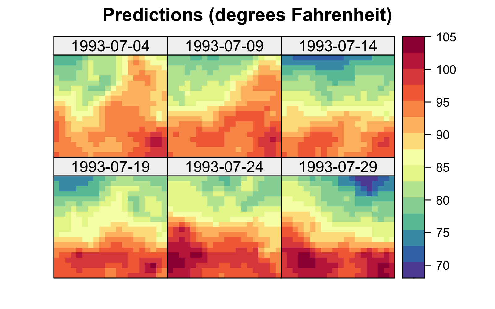
4.2.1 Spatio-Temporal Covariance Functions
We saw in the previous section that S-T predictors require that we know \(\mathbf{C}_z\) and \(\mathbf{c}_0\), and hence we need to know the spatio-temporal covariances between the hidden random process evaluated at any two locations in space and time. It is important to note that not any function can be used as a covariance function. Let a general spatio-temporal covariance function be denoted by
\[ c_*(\mathbf{s},\mathbf{s}';t,t') \equiv \textrm{cov}(Y(\mathbf{s};t),Y(\mathbf{s}';t')), \tag{4.11}\]
which is appropriate only if the function is valid (i.e., non-negative-definite, which guarantees that the variances are non-negative). (Note that in Equation 4.11 the primes are not transposes, but are used to denote different spatio-temporal locations.)
In practice, classical- implementations assume second-order stationarity: the random process is said to be second-order (or weakly) stationary if it has a constant expectation \(\mu\) (say) and a covariance function that can be expressed in terms of spatial and temporal lags:
\[ c_*(\mathbf{s},\mathbf{s}';t,t') = c(\mathbf{s}' - \mathbf{s}; t' - t) = c(\mathbf{h}; \tau), \]
where \(\mathbf{h}\equiv \mathbf{s}' - \mathbf{s}\) and \(\tau \equiv t - t'\) are the spatial and temporal lags, respectively. Recall from Chapter 2 that if the dependence on spatial lag is only a function of \(||\mathbf{h}||\), we say there is spatial . Arguably, the two biggest benefits of the second-order stationarity assumption are that it allows for more parsimonious parameterizations of the covariance function, and that it provides pseudo-replication of dependencies at given lags in space and time, both of which facilitate estimation of the covariance function’s parameters. \((\)In practice, it is unlikely that the spatio-temporal stationary covariance function is completely known and it is usually specified in terms of some parameters \(\boldsymbol{\theta}.)\)
The next question is how to obtain valid stationary (or non-stationary) spatio-temporal covariance functions. Mathematically speaking, how do we ensure that the functions we choose are non-negative-definite?
Separable (in Space and Time) Covariance Functions
Separable classes of spatio-temporal covariance functions have often been used in spatio-temporal modeling because they offer a convenient way to guarantee validity. The class is given by
\[ c(\mathbf{h};\tau) \equiv c^{(s)}(\mathbf{h}) \cdot c^{(t)}(\tau), \]
which is valid if both the spatial covariance function, \(c^{(s)}(\mathbf{h})\), and the temporal covariance function, \(c^{(t)}(\tau)\), are valid. There are a large number of classes of valid spatial and valid temporal covariance functions in the literature (e.g., the Matérn, power exponential, and Gaussian classes, to name a few). For example, the exponential covariance function (which is a special case of both the Matérn covariance function and the power exponential covariance function) is given by
\[ c^{(s)}(\mathbf{h}) = \sigma_s^2 \exp\left\{- \frac{||\mathbf{h}||}{a_s} \right\}, \]
where \(\sigma_s^2\) is the variance parameter and \(a_s\) is the spatial-dependence (or scale) parameter in units of distance. The larger \(a_s\) is, the more dependent the spatial process is. Similarly, \(c^{(t)}(\tau) = \sigma_t^2 \exp\{-|\tau|/a_t\}\) is a valid temporal covariance function (see Figure 4.3 for an example).
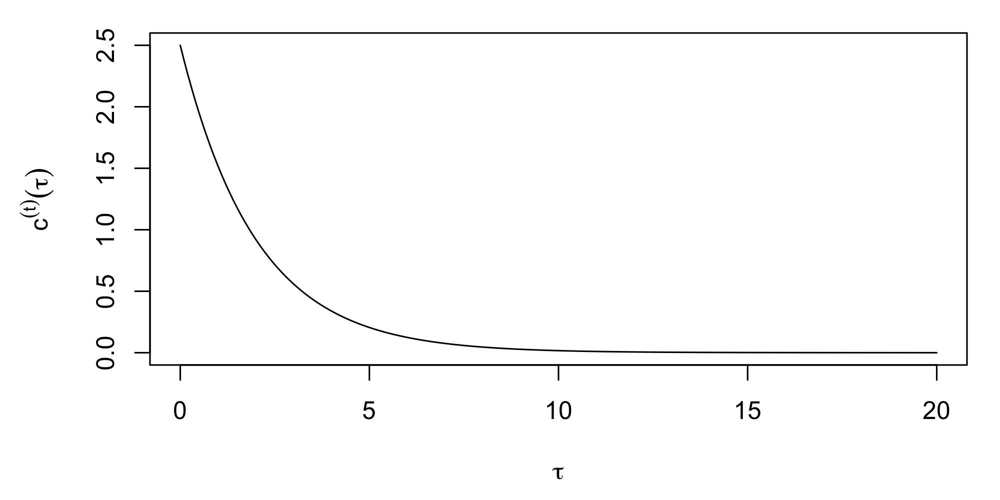
A consequence of separability is that the resulting spatio-temporal correlation function, \(\rho(\mathbf{h};\tau) \equiv c(\mathbf{h};\tau)/c({\mathbf{0}};0)\), is given by
\[ \rho(\mathbf{h};\tau) = \rho^{(s)}(\mathbf{h};0) \cdot \rho^{(t)}({\mathbf{0}};\tau), \]
where \(\rho^{(s)}(\mathbf{h};0)\) and \(\rho^{(t)}({\mathbf{0}};\tau)\) are the corresponding marginal spatial and temporal correlation functions, respectively. Thus, one only needs the marginal spatial and temporal correlation functions to obtain the joint spatio-temporal correlation function under separability. In addition, models facilitate computation. Notice (e.g., from Equation 4.6 and Equation 4.7) that the inverse \(\mathbf{C}_z^{-1}\) is ubiquitous in S-T equations. Separability can allow one to consider the inverse of the spatial and temporal components separately. For example, assume that \(Z(\mathbf{s}_{ij};t_j)\) is observed at the same \(i=1,\ldots,m_j = m\) locations at each time point, \(j=1,\ldots,T\). In this case, one can write \(\mathbf{C}_z = \mathbf{C}_z^{(t)} \otimes \mathbf{C}_z^{(s)}\), where \(\otimes\) is the (see Note 4.1), \(\mathbf{C}_z^{(t)}\) is the \(T \times T\) temporal covariance matrix, and \(\mathbf{C}_z^{(s)}\) is the \(m \times m\) spatial covariance matrix. Taking advantage of a useful property of s (see Note 4.1), \(\mathbf{C}_z^{-1} = (\mathbf{C}_z^{(t)})^{-1} \otimes (\mathbf{C}_z^{(s)})^{-1}\), which shows that to take the inverse of the \(m T \times m T\) matrix \(\mathbf{C}_z\), one only has to take the inverses of \(T \times T\) and \(m \times m\) matrices.
Consider the maximum-temperature observations (Tmax) from the NOAA data set presented in Chapter 2. After removing the obvious linear trend in latitude, we consider the empirical isotropic spatio-temporal covariance function (discussed in Section 2.4.2) calculated for the residuals, shown in Figure 4.4 (top left panel), and we compare that to the empirical model in Figure 4.4 (top right panel). That is, we are simply considering the product of \(\hat{c}(0;|\tau|)\) and \(\hat{c}(\|\mathbf{h}\|;0)\). Note that these two plots are remarkably similar, giving visual support for a model in this case. We shall discuss the lower two panels of this figure in Section 4.2.3. See Crujeiras, Fernández-Casal, and González-Manteiga (2010) and references therein for formal tests of separability.

A consequence of the separability property is that the temporal evolution of the process at a given spatial location does not depend directly on the process’ temporal evolution at other locations. As we discuss in Chapter 5, this is very seldom the case for real-world processes as it implies no interaction across space and time. The question then becomes, “how can we obtain other classes of spatio-temporal covariance functions?” Several approaches that have been developed in the literature: (i) sums-and-products formulation; (ii) construction by a spectral representation through Bochner’s theorem (which formally relates the spectral representation to the covariance representation; e.g., the inverse Fourier transform is a special case); and (iii) covariance functions from the solution of stochastic partial differential equations (SPDEs). We discuss these briefly below.
Note 4.1: Kronecker Products
Consider two matrices, an \(n_a \times m_a\) matrix, \(\mathbf{A}\), and an \(n_b \times m_b\) matrix, \(\mathbf{B}\). The Kronecker product is given by the \(n_a n_b \times m_a m_b\) matrix \(\mathbf{A}\otimes \mathbf{B}\) defined as \[ \mathbf{A}\otimes \mathbf{B}= \left[\begin{array}{ccc} a_{11} \mathbf{B}& \cdots & a_{1 m_a} \mathbf{B}\\ \vdots & \vdots & \vdots \\ a_{n_a 1} \mathbf{B}& \cdots & a_{n_a m_a} \mathbf{B} \end{array}\right]. \] The Kronecker product has some nice properties that facilitate matrix representations. For example, if \(\mathbf{A}\) is \(n_a \times n_a\) and \(\mathbf{B}\) is \(n_b \times n_b\), the inverse and determinants can be expressed in terms of the individual matrices: \[\begin{align*} (\mathbf{A}\otimes \mathbf{B})^{-1} &= \mathbf{A}^{-1} \otimes \mathbf{B}^{-1},\\ |\mathbf{A}\otimes \mathbf{B}| &= |\mathbf{A}|^{n_b} \; |\mathbf{B}|^{n_a}. \end{align*}\]
In the context of spatio-temporal processes, Kronecker products are useful in at least two ways. First, they provide a convenient way to represent spatio-temporal covariance matrices for processes. That is, consider \(\{Y(\mathbf{s}_i;t_j): i=1,\ldots,m;\ j=1,\ldots,T\}\) and define \(\mathbf{C}_y^{(s)}\) to be the \(m \times m\) matrix of purely spatial covariances and \(\mathbf{C}_y^{(t)}\) to be the \(T \times T\) matrix of purely temporal covariances. Then the \(mT \times mT\) spatio-temporal covariance matrix can be written as, \(\mathbf{C}_y = \mathbf{C}_y^{(t)} \otimes \mathbf{C}_y^{(s)}\) if the process is . Although this may not be realistic for many processes, it is advantageous because of the inverse property, \(\mathbf{C}_y^{-1} = (\mathbf{C}_y^{(t)})^{-1} \otimes (\mathbf{C}_y^{(s)})^{-1}\); see Section 4.2.1.
The second way that s are useful for spatio-temporal modeling is for forming spatio-temporal , which we discuss in Section 4.4. In particular, if we construct an \(m \times n_{\alpha,s}\) matrix \(\boldsymbol{\Phi}\) by evaluating \(n_{\alpha,s}\) spatial basis functions at \(m\) spatial locations, and a \(T \times n_{\alpha,t}\) matrix \(\boldsymbol{\Psi}\) by evaluating \(n_{\alpha,t}\) temporal basis functions at \(T\) temporal locations, then the matrix constructed from spatio-temporal basis functions formed through the tensor product of the spatial and temporal basis functions and evaluated at all combinations of spatial and temporal locations is given by the \(m T \times n_{\alpha,s} n_{\alpha,t}\) matrix \(\mathbf{B}= \boldsymbol{\Psi}\otimes \boldsymbol{\Phi}\). Basis functions can be used to construct spatio-temporal covariance functions. Note that using a set of basis functions constructed through the yields a class of spatio-temporal covariance functions that are in general not separable.
Sums-and-Products Formulation
There is a useful result in mathematics that states that, as well as the product, the sum of two non-negative-definite functions is non-negative-definite. This allows us to construct valid spatio-temporal covariance functions as the product and/or sum of valid covariance functions. For example,
\[ c(\mathbf{h};\tau) \equiv p \; c_1^{(s)}(\mathbf{h}) \cdot c_1^{(t)}(\tau) + q \; c_2^{(s)}(\mathbf{h}) + r \; c_2^{(t)}(\tau) \tag{4.12}\]
is a valid spatio-temporal covariance function when \(p > 0\), \(q \ge 0\), \(r \ge 0\); \(c_1^{(s)}(\mathbf{h})\) and \(c_2^{(s)}(\mathbf{h})\) are valid spatial covariance functions; and \(c_1^{(t)}(\tau)\) and \(c_2^{(t)}(\tau)\) are valid temporal covariance functions. Of course, Equation 4.12 can be extended to include the sum of many terms and the result is non-negative definite if each component covariance function is non-negative-definite.
The sums-and-products formulation above points to connections between separable covariance functions and other special cases. For example, consider the fully symmetric spatio-temporal covariance functions: a spatio-temporal random process \(\{Y(\mathbf{s};t)\}\) is said to have a fully symmetric spatio-temporal covariance function if, for all spatial locations \(\mathbf{s}, \mathbf{s}'\) in the spatial domain of interest and time points \(t, t'\) in the temporal domain of interest, we can write
\[ \textrm{cov}(Y(\mathbf{s};t),Y(\mathbf{s}';t')) = \textrm{cov}(Y(\mathbf{s};t'),Y(\mathbf{s}';t)). \]
Using such covariances to model spatio-temporal dependence is not always reasonable for real-world processes. For example, is it reasonable that the covariance between yesterday’s temperature in London and today’s temperature in Paris is the same as that between yesterday’s temperature in Paris and today’s temperature in London? Such a relationship might be appropriate under certain meteorological conditions, but not in general (imagine a weather system moving from northwest to southeast across Europe). So, for scientific reasons or as a result of an exploratory data analysis, the fully symmetric covariance function may not be an appropriate choice.
Now, note that the covariance given by Equation 4.12 is an example of a fully symmetric covariance, but it is only separable if \(q=r=0\). In general, separable covariance functions are always fully symmetric, while the converse is not true.
Construction via a Spectral Representation
An important example of the construction approach to spatio-temporal covariance function development was given by Noel Cressie and Huang (1999). They were able to cast the problem in the spectral domain so that one only needs to choose a one-dimensional positive-definite function of time lag in order to obtain a class of valid non-separable spatio-temporal covariance functions. In their Example 1, they construct the stationary spatio-temporal covariance function,
\[ c(\mathbf{h};\tau) = \sigma^2 \exp\{-b^2 ||\mathbf{h}||^2/(a^2 \tau^2 + 1)\}/(a^2 \tau^2 + 1)^{d/2}, \tag{4.13}\]
where \(\sigma^2 =c({\mathbf{0}};0)\), \(d\) corresponds to the spatial dimension (often \(d=2\)), and \(a \ge 0\) and \(b \ge 0\) are scale parameters in space and time, respectively. There are other classes of such spatio-temporal models, and this has been an active area of research in the past few decades (see the overview in Montero, Fernández-Avilés, and Mateu 2015).
Tip
In this book we limit our focus to gstat when doing S-T kriging. However, there are numerous other packages in R that could be used. Among these CompRandFld and RandomFields are worth noting because of the large selection of non-separable spatio-temporal covariance functions they make available to the user.
Stochastic Partial Differential Equation (SPDE) Approach
The SPDE approach to deriving spatio-temporal covariance functions was originally inspired by statistical physics, where physical equations forced by random processes that describe advective, diffusive, and decay behavior were used to describe the second moments of macro-scale processes, at least in principle. A famous example of this approach in spatial statistics resulted in the ubiquitous Matérn spatial covariance function, which was originally derived as the solution to a fractional stochastic diffusion equation and has been extended by several authors (e.g., Montero, Fernández-Avilés, and Mateu 2015).
Although such an approach can suggest non-separable spatio-temporal covariance functions, only a few special (simple) cases lead to closed-form functions N. Cressie and Wikle (2011). Perhaps more importantly, although these models appear to have a physical basis through the SPDE, macro-scale real-world processes of interest are seldom this simple (e.g., linear and stationary in space and/or time). That is, the spatio-temporal covariance functions that can be obtained in closed form from SPDEs are seldom directly appropriate models for physical processes (but may still provide good fits to data).
4.2.2 Spatio-Temporal Semivariograms
Historically, it has been common in the area of spatial statistics known as geostatistics to consider dependence through the variogram. In the context of a spatio-temporal random process \(\{Y(\mathbf{s};t)\}\), the spatio-temporal variogram is defined as
\[ \textrm{var}(Y(\mathbf{s};t) - Y(\mathbf{s}';t')) \equiv 2 \gamma(\mathbf{s},\mathbf{s}';t,t'), \tag{4.14}\]
where \(\gamma( \cdot)\) is called the (see Note 2.1). The stationary version of the spatio-temporal variogram is denoted by \(2 \gamma(\mathbf{h};\tau)\), where \(\mathbf{h}= \mathbf{s}' - \mathbf{s}\) and \(\tau = t' - t\), analogous to the stationary-covariance representation given previously. The underlying process \(Y\) is considered to be intrinsically stationary if it has a constant expectation and a stationary variogram. When the process is second-order stationary (second-order stationarity is a stronger restriction than intrinsic stationarity), there is a useful and simple relationship between the spatio-temporal and the covariance function, namely,
\[ \gamma(\mathbf{h};\tau) = c(\mathbf{0};0) - c(\mathbf{h};\tau). \tag{4.15}\]
Notice that strong spatio-temporal dependence corresponds to small values of the . Thus, contour plots of \(\{\gamma(\mathbf{h};\tau)\}\) in Equation 4.15 start near zero close to the origin \((\mathbf{h};\tau) = (\mathbf{0},0)\), and they rise to a constant value (the “sill”) as both \(\mathbf{h}\) and \(\tau\) move away from the origin.
Although there has been a preference to consider dependence through the variogram in geostatistics, this has not been the case in more mainstream spatio-temporal statistical analyses. The primary reason for this is that most real-world processes are best characterized in the context of local second-order stationarity. The difference between intrinsic stationarity and second-order stationarity is most appreciated when the lags \(\mathbf{h}\) and \(\tau\) are large. If only local stationarity is expected and modeled, the extra generality given by the variogram is not needed. Still, the empirical semivariogram offers a useful way to summarize the spatio-temporal dependence in the data and to fit a spatio-temporal covariance function.
On a theoretical level, the stationary variogram allows S-T for a larger class of processes (i.e., intrinsically stationary processes) than the second-order stationary processes. A price to pay for this extra generality is the extreme caution needed when using the variogram to find optimal coefficients. N. Cressie and Wikle (2011, 148) point out that the universal- weights may not sum to 1 and, in situations where they do not, the resulting variogram-based predictor will not be optimal. However, when using the covariance-based predictor, there are no such issues and it is always optimal.
In addition, on a more practical level, most spatio-temporal analyses consider models that are specified from a likelihood perspective or a perspective, where covariance matrices are needed. The variogram by itself does not specify the covariance matrix, since one also needs to model the variance function \(\sigma^2(\mathbf{s};t) \equiv \textrm{var}(Y(\mathbf{s};t))\), which is usually impractical unless it is stationary and does not depend on \(\mathbf{s}\) and \(t\). Some software packages that perform S-T , such as gstat, fit variogram functions to data, mainly for historical reasons and because of the implicit assumption in Equation 4.14 that a constant mean need not be assumed when estimating the variogram. (This is generally a good thing because the constant mean assumption is tenuous in practice, since the mean for real-world processes typically depends on exogenous covariates that vary with space and time.)
4.2.3 Gaussian Spatio-Temporal Model Estimation
The spatio-temporal covariance and variogram functions presented above depend on unknown parameters. These are almost never known in practice and must be estimated from the data. There is a history in spatial statistics of fitting covariance functions (or semivariograms) directly to the empirical estimates – for example, by using a least squares or weighted least squares approach . However, in the spatio-temporal context we prefer to consider fully parameterized covariance models and infer the parameters through likelihood-based methods or through fully methods. This follows closely the approaches in mixed-linear-model parameter estimation; for an overview, see McCulloch and Searle (2001). We briefly describe the likelihood-based approach and the approach below.
Likelihood Estimation
Given the data model Equation 4.3, note that \(\mathbf{C}_z = \mathbf{C}_y + \mathbf{C}_\epsilon\). Then, in obvious notation, \(\mathbf{C}_z\) depends on parameters \(\boldsymbol{\theta}\equiv \{\boldsymbol{\theta}_y,\boldsymbol{\theta}_\epsilon\}\) for the covariance functions of the hidden process \(Y\) and the measurement-error process \(\epsilon\), respectively. The likelihood can then be written as
\[ L(\boldsymbol{\beta},\boldsymbol{\theta}; \mathbf{Z}) \propto |\mathbf{C}_z(\boldsymbol{\theta})|^{-1/2} \exp\left\{-\frac{1}{2}(\mathbf{Z}- \mathbf{X}\boldsymbol{\beta})'(\mathbf{C}_z(\boldsymbol{\theta}))^{-1}(\mathbf{Z}- \mathbf{X}\boldsymbol{\beta})\right\}, \tag{4.16}\]
and we maximize this with respect to \(\{\boldsymbol{\beta},\boldsymbol{\theta}\}\), thus obtaining the maximum likelihood estimates (MLEs), \(\{\widehat{\boldsymbol{\beta}}_{\mathrm{mle}}, \widehat{\boldsymbol{\theta}}_{\mathrm{mle}}\}\). Because the covariance parameters appear in the matrix inverse and determinant in Equation 4.16, analytical maximization for most parametric covariance models is not possible, but numerical methods can be used. To reduce the number of parameters in this maximization, we often consider “profiling,” where we replace \(\boldsymbol{\beta}\) in Equation 4.16 with the generalized least squares estimator, \({\boldsymbol{\beta}}_{\mathrm{gls}} = (\mathbf{X}' \mathbf{C}_z(\boldsymbol{\theta})^{-1} \mathbf{X})^{-1} \mathbf{X}' \mathbf{C}_z(\boldsymbol{\theta})^{-1} \mathbf{Z}\) (which depends only on \(\boldsymbol{\theta}\)). Then the profile likelihood is just a function of the unknown parameters \(\boldsymbol{\theta}\). Using a numerical optimization method (e.g., Newton–Raphson) to obtain \(\widehat{\boldsymbol{\theta}}_{\mathrm{mle}}\), we then obtain \(\widehat{\boldsymbol{\beta}}_{\mathrm{mle}} = (\mathbf{X}' \mathbf{C}_z(\widehat{\boldsymbol{\theta}}_{\mathrm{mle}})^{-1} \mathbf{X})^{-1} \mathbf{X}' \mathbf{C}_z(\widehat{\boldsymbol{\theta}}_{\mathrm{mle}})^{-1} \mathbf{Z}\), which is the MLE of \(\boldsymbol{\beta}\). The parameter estimates \(\{\widehat{\boldsymbol{\beta}}_{\mathrm{mle}}, \widehat{\boldsymbol{\theta}}_{\mathrm{mle}}\}\) are then substituted into the kriging equations above (e.g., Equation 4.8 and Equation 4.10) to obtain the empirical best linear unbiased predictor (EBLUP) and the associated empirical prediction variance.
Tip
Maximizing the log-likelihood (i.e., the \(\log\) of Equation 4.16) in R can be done in a number of ways. Among the most popular functions in base R are nlm, which implements a Newton-type algorithm, and optim, which contains a number of general-purpose routines, some of which are gradient-based. When a simple covariance function is used, the gradient can be found analytically, and gradient information may then be used to facilitate optimization. Many of the parameters in our models (such as the variance or dependence-scale parameters) need to be positive to ensure positive-definite covariance matrices. This can be easily achieved by finding the MLEs of the log of the parameters, instead of the parameters themselves. Then the MLE of the parameter on the original scale is obtained by exponentiating the MLE on the log scale. In this case, one typically uses the delta method to obtain the variance of the transformed parameter estimates (see, for example, Kendall and Stuart 1969).
As described in Note 4.2, restricted maximum likelihood (REML) considers the likelihood of a linear transformation of the data vector such that the errors are orthogonal to the \(\mathbf{X}\)s that make up the mean function. Numerical maximization of the associated likelihood, which is only a function of the parameters \(\boldsymbol{\theta}\) (i.e., not of \(\boldsymbol{\beta}\)), gives \(\widehat{\boldsymbol{\theta}}_{\mathrm{reml}}\). These estimates are substituted into Equation 4.9, the GLS formula for \(\boldsymbol{\beta}\), to obtain \(\widehat{\boldsymbol{\beta}}_{\mathrm{reml}}\) as well as the kriging equations Equation 4.8 and Equation 4.10.
Both the MLE and REML approaches have the advantage that they are based on the “likelihood principle” and, assuming that the Gaussian distributional assumptions are correct, they have desirable properties such as sufficiency, invariance, consistency, efficiency, and asymptotic normality. In mixed-effects models and in spatial statistics, REML is usually preferred over MLE for estimation of covariance parameters because REML typically has less bias in small samples (see, for example, the overview in Wu, Gumpertz, and Boos 2001).
Note 4.2: Restricted Maximum Likelihood
Consider a contrast matrix \(\mathbf{K}\) such that \(E(\mathbf{K}\mathbf{Z}) = \mathbf{0}\). For example, let \(\mathbf{K}\) be an \((m - p ) \times m\) matrix orthogonal to the column space of the \(m \times p\) design matrix \(\mathbf{X}\). That is, let \(\mathbf{K}\) correspond to the \(m - p\) linearly independent rows of \((\mathbf{I}- \mathbf{X}(\mathbf{X}' \mathbf{X})^{-1} \mathbf{X}')\). Because \(\mathbf{K}\mathbf{X}= \mathbf{0}\), it follows that \(E(\mathbf{K}\mathbf{Z}) = \mathbf{K}\mathbf{X}\boldsymbol{\beta}= \mathbf{0}\), and \(\textrm{var}(\mathbf{K}\mathbf{Z}) = \mathbf{K}\mathbf{C}_z(\boldsymbol{\theta}) \mathbf{K}'\). In this case, the likelihood based on \(\mathbf{K}\mathbf{Z}\) is not a function of the mean parameters \(\boldsymbol{\beta}\) and is given by
\[ L_{\mathrm{reml}}(\boldsymbol{\theta};\mathbf{Z}) \propto |\mathbf{K}\mathbf{C}_z(\boldsymbol{\theta}) \mathbf{K}'|^{-1/2} \exp\left\{-\frac{1}{2}(\mathbf{K}\mathbf{Z})'(\mathbf{K}\mathbf{C}_z(\boldsymbol{\theta}) \mathbf{K}')^{-1}(\mathbf{K}\mathbf{Z}) \right\}. \tag{4.17}\]
Then Equation 4.17 is maximized numerically to obtain \(\widehat{\boldsymbol{\theta}}_{\mathrm{reml}}\). Note that parameter estimation and statistical inference with REML do not depend on the specific choice of \(\mathbf{K}\), so long as it is a contrast matrix that leads to \(E(\mathbf{K}\mathbf{Z}) = \mathbf{0}\) (Patterson and Thompson 1971). One can then use these estimates in a GLS estimate of \(\boldsymbol{\beta}\): \(\widehat{\boldsymbol{\beta}}_{\mathrm{reml}} \equiv (\mathbf{X}' \mathbf{C}_z(\widehat{\boldsymbol{\theta}}_{\mathrm{reml}})^{-1} \mathbf{X})^{-1} \mathbf{X}' \mathbf{C}_z(\widehat{\boldsymbol{\theta}}_{\mathrm{reml}})^{-1} \mathbf{Z}\).
Bayesian Inference
Instead of treating \(\boldsymbol{\beta}\) and \(\boldsymbol{\theta}\) as fixed, unknown, and to be estimated (e.g., from the likelihood), prior distributions \([\boldsymbol{\beta}]\) and \([\boldsymbol{\theta}]\) (often assumed independent) could be posited for the mean parameters \(\boldsymbol{\beta}\) and the covariance parameters \(\boldsymbol{\theta}\), respectively. Typical choices for \([\boldsymbol{\theta}]\) do not admit closed-form posterior distributions for \([Y(\mathbf{s}_0) | \mathbf{Z}]\), which means that the predictor \(E(Y(\mathbf{s}_0;t_0) | \mathbf{Z})\) and the associated uncertainty, \(\textrm{var}(Y(\mathbf{s}_0;t_0) | \mathbf{Z})\), are not available in closed form and must be obtained through numerical evaluation of the posterior distribution (for more details, see Section 4.5.2 below; N. Cressie and Wikle (2011); Banerjee, Carlin, and Gelfand (2015)).
Example: S-T Kriging
Consider the maximum-temperature observations in the NOAA data set Tmax. The empirical covariogram of these data is shown in the top left panel of Figure 4.4. Consider two spatio-temporal covariance functions fitted to the residuals from a model with a regression component that includes an intercept and latitude as a covariate. The first of these covariance functions is given by an isotropic and stationary separable model of the form
\[ c^{(\mathrm{sep})}(\| \mathbf{h}\| ; | \tau|) \equiv c^{(s)}(\| \mathbf{h}\|) \cdot c^{(t)}(|\tau|), \tag{4.18}\]
in which we let both covariance functions, \(c^{(s)}(\cdot)\) and \(c^{(t)}(\cdot)\), take the form
\[ c^{(\cdot)}(h) = b_1\exp(-\phi h) + b_2I(h=0), \tag{4.19}\]
where \(\phi\), \(b_1\), and \(b_2\) are parameters that are different for \(c^{(s)}(\cdot)\) and \(c^{(t)}(\cdot)\) and need to be estimated; and \(I(\cdot)\) is the indicator function that is used to represent the so-called nugget effect, made up of the measurement-error variance plus the micro-scale variation. The fitted model is shown in the bottom left panel of Figure 4.4.
The second model we fit is a non-separable spatio-temporal covariance function, in which the temporal lag is scaled to account for the different nature of space and time. This model is given by
\[ c^{(\mathrm{st})}(\| \mathbf{v}_a \|) \equiv b_1\exp(-\phi \| \mathbf{v}_a \|) + b_2I(\| \mathbf{v}_a \| = 0), \tag{4.20}\]
where \(\mathbf{v}_a \equiv (\mathbf{h}',a \tau)'\), and recall that \(||\mathbf{v}_a|| = (\mathbf{h}' \mathbf{h}+ a^2 \tau^2)^{1/2}\). Here, \(a\) is the scaling factor used for generating the space-time anisotropy. The fitted model is shown in the bottom right panel of Figure 4.4.
The non-separable spatio-temporal covariance function (Equation 4.20) allows for space-time anisotropy, but it is otherwise relatively inflexible. It only contains one parameter (\(a\)) to account for the different scaling needed for space and time, one parameter (\(\phi\)) for the length scale, and two parameters to specify the variance (the nugget effect, \(b_2\), and the variance of the smooth component, \(b_1\)). Thus, Equation 4.20 has a total of four parameters, in contrast to the six parameters in Equation 4.18. This results in a relatively poor fit to the Tmax data from the NOAA data set. In this case, the separable model is able to provide a better reconstruction of the empirical covariance function despite its lack of space-time interaction, which is not surprising given that the fitted separable covariance function (Figure 4.4, top right) is visually similar to the empirical spatio-temporal covariance function (Figure 4.4, top left). We note that although the separable model fits better in this case, it is still a rather unrealistic model for most processes of interest.
4.3 Random-Effects Parameterizations
As discussed previously, it can be difficult to specify realistic valid spatio-temporal covariance functions and to work with large spatio-temporal covariance matrices (e.g., \(\mathbf{C}_z\)) in situations with large numbers of prediction or observation locations. One way to mitigate these problems is to take advantage of conditional specifications that the hierarchical modeling framework allows.
We can consider classical linear mixed models from either a conditional perspective, where we condition the response on the random effects, or from a marginal perspective, where the random effects have been averaged (integrated) out (see Note 4.3), and it is this marginal distribution that is modeled. We digress briefly from the spatio-temporal context to illustrate the conditional versus marginal approach in a simple longitudinal-data-analysis setting. Longitudinal data are collected over time, often in a clinical trial where the response to drug treatments and controls is measured on the same subjects at different follow-up times. Here, one might allow there to be subject-specific intercepts or slopes corresponding to the treatment effect over time.
Figure 4.5 shows simulated data for a longitudinal study in which 90 individuals are assigned randomly to three treatment groups (control, treatment 1, and treatment 2), 30 per group. Their responses are then plotted through time (20 time points). In each case, the response is generally linear with time, with individual-specific random intercepts and slopes. These responses can be modeled in terms of a linear mixed model, with fixed effects corresponding to the treatment (control, treatment 1, and treatment 2), individual random effects for the slope and intercept, and a random effect for the error. The random effects correspond to a situation where individuals have somewhat different baseline responses (intercept), and their response with time to the treatment is also subject to individual variation (slope).
For the simulated data shown in Figure 4.5, we might consider a longitudinal model such as Verbeke and Molenberghs (2009), Section 3.3:
\[ Z_{ij} = \left\{ \begin{array}{ll} (\beta_0 + \alpha_{0i}) + (\beta_1 + \alpha_{1i}) t_{j} + \epsilon_{ij}, & \text{if the subject receives the control}, \\ (\beta_0 + \alpha_{0i}) + (\beta_2 + \alpha_{1i}) t_{j} + \epsilon_{ij}, & \text{if the subject receives treatment 1}, \\ (\beta_0 + \alpha_{0i}) + (\beta_3 + \alpha_{1i}) t_{j} + \epsilon_{ij}, & \text{if the subject receives treatment 2}, \end{array} \right. \]
where \(Z_{ij}\) is the response for the \(i\)th subject (\(i=1,\ldots,n=90\)) at time \(j=1,\ldots,T=20\); \(\beta_0\) is an overall fixed intercept; \(\beta_1, \beta_2, \beta_3\) are fixed time-trend effects; and \(\alpha_{0i} \sim \text{iid} \, \text{Gau}(0,\sigma^2_1)\) and \(\alpha_{1i} \sim \text{iid} \, \text{Gau}(0,\sigma^2_2)\) are individual-specific random intercept and slope effects, respectively. We can write this model in the classical linear mixed-model notation as
\[ \mathbf{Z}_i = \mathbf{X}_i \boldsymbol{\beta}+ \boldsymbol{\Phi}\boldsymbol{\alpha}_i + \boldsymbol{\varepsilon}_i, \]
where \(\mathbf{Z}_i\) is a \(20\)-dimensional vector of responses for the \(i\)th individual; \(\mathbf{X}_i\) is a \(20 \times 4\) matrix consisting of a column vector of \(1\)s (intercept) and three columns indicating the treatment group of the \(i\)th individual; \(\boldsymbol{\beta}\) is a four-dimensional vector of fixed effects; \(\boldsymbol{\Phi}\) is a \(20 \times 2\) matrix with a vector of \(1\)s in the first column and the second column consists of the vector of times, \((1,2,\ldots,20)'\); the associated random-effect vector is \(\boldsymbol{\alpha}_i \equiv (\alpha_{0i},\alpha_{1i})' \sim \text{Gau}(\mathbf{0},\mathbf{C}_\alpha)\), where \(\mathbf{C}_\alpha = \text{diag}(\sigma^2_1, \sigma^2_2)\); and \(\boldsymbol{\varepsilon}_i \sim \text{Gau}(\mathbf{0},\sigma^2_\epsilon \mathbf{I})\) is a \(20\)-dimensional error vector. We assume that the elements of \(\{\boldsymbol{\alpha}_i\}\) and \(\{\boldsymbol{\varepsilon}_i\}\) are all mutually independent.
Because the variation in the individuals’ intercepts and slopes is specified by random effects, this formulation allows one to consider inference at the subject (individual) level (e.g., predictions of an individual’s true values). However, if interest is in the fixed treatment effects \(\boldsymbol{\beta}\), one might consider the marginal distribution of the responses in which these individual random effects have been removed through averaging (integration). Responses that share common random effects exhibit marginal dependence through the marginal covariance matrix, and so the inference on the fixed effects (e.g., via generalized least squares) then accounts for this more complicated marginal dependence. For the example presented here, one can show that the marginal covariance for an individual’s response at time \(t_j\) and \(t_k\) is given by \(\mbox{cov}(Z_{ij},Z_{ik}) = \sigma^2_1 + t_j t_k \sigma^2_2 + \sigma^2_\epsilon I(j = k)\), which says that the marginal variance is time-varying, whereas the conditional covariance (conditioned on \(\boldsymbol{\alpha}\)) is simply \(\sigma^2_\epsilon I(j = k)\).
In the context of spatial or spatio-temporal modeling, the same considerations as for the classical linear mixed-effects model apply. That is, we can also write the process of interest conditional on random effects, where the random effects might be spatial, temporal, or spatio-temporal. Why is this important? As we show in the next section, it allows us to build spatio-temporal dependence conditionally, in such a way that the implied marginal spatio-temporal covariance function is always valid, and it provides some computational advantages.
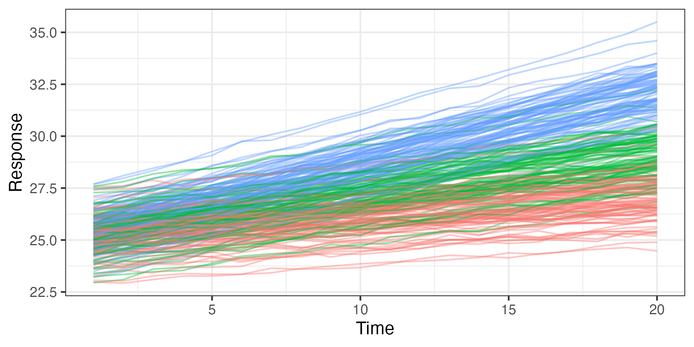
Note 4.3: Marginal and Conditional Linear Mixed Models
Consider the conditional representation of a classic general linear mixed-effects model Laird and Ware (1982) for response vector \(\mathbf{Z}\) and fixed and random effects vectors, \(\boldsymbol{\beta}\) and \(\boldsymbol{\alpha}\), respectively. Specifically, consider
\[ \mathbf{Z}| \boldsymbol{\alpha}\sim Gau(\mathbf{X}\boldsymbol{\beta}+ \boldsymbol{\Phi}\boldsymbol{\alpha}, \mathbf{C}_\epsilon), \tag{4.21}\]
\[ \boldsymbol{\alpha}\sim Gau({\mathbf{0}}, \mathbf{C}_\alpha), \]
where \(\mathbf{X}\) and \(\boldsymbol{\Phi}\) are assumed to be known matrices, and \(\mathbf{C}_\epsilon\) and \(\mathbf{C}_\alpha\) are known covariance matrices. The marginal distribution of \(\mathbf{Z}\) is then given by integrating out the random effects:
\[ [\mathbf{Z}] = \int [\mathbf{Z}\; | \; \boldsymbol{\alpha}][\boldsymbol{\alpha}] \textrm{d}\boldsymbol{\alpha}. \tag{4.22}\]
Note that dependence on \(\boldsymbol{\theta}\), which recall are the covariance parameters in \(\mathbf{C}_z\) and \(\mathbf{C}_\alpha\), has been suppressed in Equation 4.22, although the (implicit) presence of \(\boldsymbol{\theta}\) can be seen in Equation 4.23–Equation 4.26 below. We can obtain this distribution by making use of iterated conditional expectation and variance formulas. In particular, note that we can write the model associated with Equation 4.21 as
\[ \mathbf{Z}= \mathbf{X}\boldsymbol{\beta}+ \boldsymbol{\Phi}\boldsymbol{\alpha}+ \boldsymbol{\varepsilon}, \quad\boldsymbol{\varepsilon}\sim Gau({\mathbf{0}}, \mathbf{C}_\epsilon), \tag{4.23}\]
and then
\[ E(\mathbf{Z}) = E_{\alpha}\{E(\mathbf{Z}| \boldsymbol{\alpha})\} = E_{\alpha}\{\mathbf{X}\boldsymbol{\beta}+ \boldsymbol{\Phi}\boldsymbol{\alpha}\} = \mathbf{X}\boldsymbol{\beta}, \tag{4.24}\]
\[ \textrm{var}(\mathbf{Z}) = \textrm{var}_{\alpha}\{E(\mathbf{Z}| \boldsymbol{\alpha})\} + E_{\alpha}\{\textrm{var}(\mathbf{Z}| \boldsymbol{\alpha})\} = \boldsymbol{\Phi}\mathbf{C}_\alpha \boldsymbol{\Phi}' + \mathbf{C}_\epsilon. \tag{4.25}\]
Then, since Equation 4.23 shows that \(\mathbf{Z}\) is a linear combination of normally distributed random variables, it is also normally distributed and the marginal distribution is given by
\[ \mathbf{Z}\; \sim \; Gau(\mathbf{X}\boldsymbol{\beta}, \boldsymbol{\Phi}\mathbf{C}_\alpha \boldsymbol{\Phi}' + \mathbf{C}_\epsilon). \tag{4.26}\]
Thus, we can see that the integration over the common random effects \(\boldsymbol{\alpha}\) in Equation 4.22 induces a more complicated error covariance structure in the marginal distribution (i.e., compare the marginal covariance matrix, \(\boldsymbol{\Phi}\mathbf{C}_\alpha \boldsymbol{\Phi}' + \mathbf{C}_\epsilon\), to the conditional covariance matrix, \(\mathbf{C}_\epsilon\)). This idea of conditioning on random effects and inducing dependence through integration is fundamentally important to hierarchical statistical modeling. That is, it is typically easier to model means than it is to model covariances, and so we put our modeling effort into the conditional mean and then let the integration induce the more complicated marginal dependence rather than specifying it directly.
4.4 Basis-Function Representations
By themselves, the conditional specifications discussed in Section 4.3 are often not enough to help us deal with the problem of specifying realistic spatio-temporal covariance structures and deal with the “curse of dimensionality,” which is endemic in spatio-temporal statistics. We also need to pay particular attention to our choice of \(\boldsymbol{\Phi}\), and we often do this through basis-function expansions (recall that we introduced basis functions in Chapter 1 and in more detail in Chapter 3).
Basis functions, like covariates, can be nonlinear functions of \((\mathbf{s};t)\); however, the expansion is a linear function of the basis functions’ coefficients. We assume that these coefficients are the objects of inference in a statistical additive model. If the coefficients are fixed but unknown and to be estimated, then we have a regression model and the basis functions act as covariates (see, for example, Section 3.2). If the coefficients are random, then we have a random-effects model (or, if covariates are also present, a mixed-effects model) and we can perform inference on the moments of those random effects. More importantly, as we have shown in Section 4.3, this framework allows us to build complexity through marginalization. This often simplifies the model specification, particularly if we consider the random effects to be associated with spatial, temporal, or spatio-temporal . In the following subsections, we consider spatio-temporal models that involve these three types of basis functions.
4.4.1 Random Effects with Spatio-Temporal Basis Functions
Assuming the same data model (Equation 4.3) as above, we rewrite the process model (Equation 4.2) in terms of fixed and random effects, \(\boldsymbol{\beta}\) and \(\{\alpha_i: i=1,\ldots,n_\alpha\}\), respectively:
\[ Y(\mathbf{s};t) = \mathbf{x}(\mathbf{s};t)'\boldsymbol{\beta}+ \eta(\mathbf{s};t) \; = \; \mathbf{x}(\mathbf{s};t)'\boldsymbol{\beta}+ \sum_{i=1}^{n_\alpha} \phi_{i}(\mathbf{s};t) \alpha_i + \nu(\mathbf{s};t), \tag{4.27}\]
where \(\{\phi_{i}(\mathbf{s};t): i=1,\ldots,n_\alpha \}\) are specified spatio-temporal corresponding to location \((\mathbf{s};t)\), \(\{\alpha_i\}\) are random effects, and \(\nu(\mathbf{s};t)\) is sometimes needed to represent small-scale spatio-temporal random effects not captured by the basis functions. So, in Equation 4.27 we are just decomposing the spatio-temporal random process, \(\eta(\mathbf{s};t)\), into a linear combination of random effects and a “residual” error term.
Let \(\boldsymbol{\alpha}\sim Gau({\mathbf{0}},\mathbf{C}_\alpha)\), where \(\boldsymbol{\alpha}\equiv (\alpha_1,\ldots,\alpha_{n_\alpha})'\). Suppose we are interested in making inference on the process \(Y\) at \(n_y\) spatio-temporal locations, which we denote by the \(n_y\)-dimensional vector \(\mathbf{Y}\). The process model then becomes
\[ \mathbf{Y}= \mathbf{X}\boldsymbol{\beta}+ \boldsymbol{\Phi}\boldsymbol{\alpha}+ \boldsymbol{\nu}, \tag{4.28}\]
where the \(i\)th column of the \(n_y \times n_\alpha\) matrix \(\boldsymbol{\Phi}\) corresponds to the \(i\)th basis function, \(\phi_{i}(\cdot;\cdot)\), at all of the \(n_y\) spatio-temporal locations, and in the same order as that used to construct \(\mathbf{Y}\). The vector \(\boldsymbol{\nu}\) also corresponds to the spatio-temporal ordering given in \(\mathbf{Y}\), and \(\boldsymbol{\nu}\sim Gau({\mathbf{0}},\mathbf{C}_\nu)\). In this case, one can see (Note 4.3) that the marginal distribution of \(\mathbf{Y}\) is given by \(\mathbf{Y}\sim Gau(\mathbf{X}\boldsymbol{\beta}, \boldsymbol{\Phi}\mathbf{C}_\alpha \boldsymbol{\Phi}' + \mathbf{C}_\nu )\), so that \(\mathbf{C}_y = \boldsymbol{\Phi}\mathbf{C}_\alpha \boldsymbol{\Phi}' + \mathbf{C}_\nu\). Now the vector of covariance parameters \(\boldsymbol{\theta}\) is augmented to include parameters in \(\mathbf{C}_\nu\). The spatio-temporal dependence is accounted for by the spatio-temporal basis functions, \(\boldsymbol{\Phi}\), and in general this could accommodate non-separable dependence. A benefit of this approach is that the spatio-temporal modeling effort focuses on the fixed number \(n_\alpha\) of random effects. In this case, note that the random effects \(\boldsymbol{\alpha}\) are not indexed by space and time, so it should be easier to specify a model for them. For example, we can specify a covariance matrix to describe their dependence, which is easier than specifying a covariance function.
In situations where \(n_\alpha \ll n_y\) (i.e., a low-rank representation), an additional benefit comes from being able to perform matrix inverses in terms of \(n_\alpha\)-dimensional matrices (through well-known matrix-algebra relationships). Specifically, under model Equation 4.28 we note that we can write \(\mathbf{C}_z = \boldsymbol{\Phi}\mathbf{C}_\alpha \boldsymbol{\Phi}' + \mathbf{V}\), where we define \(\mathbf{V}\equiv \mathbf{C}_\nu + \mathbf{C}_\epsilon\). Then, using the well-known Sherman–Morrison–Woodbury matrix identities [e.g., available at https://doi.org/10.1007/978-1-4757-2085-3] , we can write
\[ \mathbf{C}_z^{-1} = \mathbf{V}^{-1} - \mathbf{V}^{-1} \boldsymbol{\Phi}(\boldsymbol{\Phi}' \mathbf{V}^{-1} \boldsymbol{\Phi}+ \mathbf{C}_\alpha^{-1})^{-1} \boldsymbol{\Phi}' \mathbf{V}^{-1}. \]
Importantly, if \(\mathbf{V}^{-1}\) has simple structure (e.g., is sparse or diagonal) and \(n_\alpha \ll n_y\), then this inverse is easy to calculate because it is a function of a simple high-dimensional matrix \(\mathbf{V}^{-1}\) and a low-dimensional matrix inverse \(\mathbf{C}_\alpha^{-1}\).
It is important to note that even in the full-rank (\(n_\alpha = n_y\)) and over-complete (\(n_\alpha > n_y\)) cases there can still be computational benefits through induced sparsity in \(\mathbf{C}_\alpha\) and the use of efficient matrix-multiplication routines that use multiresolution algorithms, orthogonality, and/or sparse precision matrices. In addition, basis-function implementations may assume that \(\boldsymbol{\nu}= {\mathbf{0}}\) and often that \(\boldsymbol{\Phi}\) is orthogonal, so that \(\boldsymbol{\Phi}\boldsymbol{\Phi}' = \mathbf{I}\); in those cases, one can reduce the computational burden significantly. Finally, we note that specific and methodologies are devised to take advantage of other properties of various matrices (e.g., sparse structure on the random-effects covariance matrix, \(\mathbf{C}_\alpha\), or on the random-effects precision matrix, \(\mathbf{C}_\alpha^{-1}\)).
Tip
Sparse matrices can be used in R using definitions in the packages Matrix or spam. For both these packages, arithmetic operations, decompositions (e.g., the Cholesky decomposition), back-solves and forward-solves, and other important matrix operations, can be done seamlessly using standard R commands. With Matrix, a sparse matrix can be constructed using the function sparseMatrix, while a sparse diagonal matrix can be constructed using the function Diagonal. With the former, the argument symmetric = TRUE can be used to specify a sparse symmetric matrix.
The definition of “basis function” in our spatio-temporal context is pretty liberal; the matrix \(\boldsymbol{\Phi}\) in the product \(\boldsymbol{\Phi}\boldsymbol{\alpha}\) is a spatio-temporal basis-function matrix so long as its coefficients \(\boldsymbol{\alpha}\) are random and the columns of \(\boldsymbol{\Phi}\) are spatio-temporally referenced. One decision associated with fitting model Equation 4.27 concerns the choice of . For spatial processes, the decisions one makes with regard to the choice of are usually not that critical, as there are multiple types of bases that can accommodate the same spatial variability. However, as one starts considering spatio-temporal processes, the choice of can make a difference, especially for the dynamical formulations presented in Chapter 5.
In general, one can use (i) fixed or parameterized basis functions, (ii) local or global , (iii) reduced-rank, complete, or over-complete bases, and (iv) basis functions with expansion coefficients possibly indexed by space, time, or space-time. Further, the choice is affected by the presence and type of residual structure and the distribution of the random effects. Historically, it has been fairly challenging to come up with good spatio-temporal basis functions (for the same reason it has been difficult to come up with truly realistic spatio-temporal covariance functions). One simplification is to consider tensor-product (mentioned in Section 3.2 and Note 4.1), where we define the spatio-temporal basis function as the product of a spatial basis function and a temporal basis function. Note that this does not yield a separable spatio-temporal model, in general. It is also quite common to see spatio-temporal-dependence models for \(Y\), where the statistical dependence comes from spatial-only whose coefficients are temporal stochastic processes (Section 4.4.2).
Example: Fixed Rank Kriging
A widely adopted method for rank reduction is fixed rank kriging (FRK), implemented in R through the package FRK. Lab 4.2 demonstrates how FRK can be applied to the maximum temperature (Tmax) in the NOAA data set using \(n_\alpha = 1880\) space-time tensor-product basis functions (see Note 4.1) at two resolutions for \(\{\phi_i(\mathbf{s};t):i=1,\dots,n_\alpha\}\). In particular, bisquare basis functions are used (see Lab 4.2 for details). FRK also considers a fine-scale-variation component \(\boldsymbol{\nu}\) such that \(\mathbf{C}_\nu\) is diagonal. The matrix \(\mathbf{C}_\alpha\) is constructed such that the coefficients \(\boldsymbol{\alpha}\) at each resolution are independent, and such that the covariances between these coefficients within a resolution decay exponentially with the distance between the centers of the basis functions. Parameters are estimated using an EM algorithm for computing maximum likelihood estimates (see Note 4.4).
Figure 4.6 shows the predictions and prediction standard errors obtained using FRK; as is typical for kriging, the computations are made with \(\widehat{\boldsymbol{\theta}}\) substituted in for the unknown covariance parameters \(\boldsymbol{\theta}\). Although the uncertainty in \(\widehat{\boldsymbol{\theta}}\) is not accounted for in this setting, it is typically thought to be a fairly minor component of the variation in the spatio-temporal prediction. The predictions are similar to those obtained using S-T kriging in Figure 4.2 of Section 4.2, but they are also a bit “noisier” because of the assumed uncorrelated fine-scale variation term; see Equation 4.27. The prediction standard errors show similar patterns to those obtained earlier (Figure 4.2), although there are notable differences upon visual examination. This is commonly observed when using reduced-rank methods, and it is particularly evident with very-low-rank implementations (e.g., with EOFs) accompanied with spatially uncorrelated fine-scale variation. In such cases, the prediction-standard-error maps can have prediction standard errors related more to the shapes of the basis functions and less to the prediction location’s proximity to an observation.
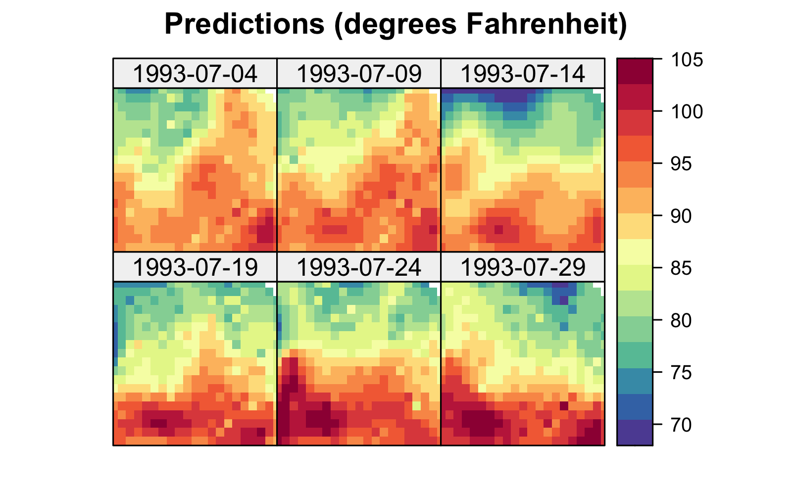
Tmax and right: prediction standard errors in degrees Fahrenheit within a square box enclosing the domain of interest for six days (each 5 days apart) spanning the temporal window of the data, 01 July 1993–20 July 2003, using bisquare spatio-temporal and the R package FRK. Data for 14 July 1993 were omitted from the original data set.
Note 4.4: Basic EM Algorithm
In some cases, it can be computationally more efficient to perform maximum likelihood estimation using the expectation-maximization (EM) algorithm rather than through direct optimization of the likelihood function. The basic idea is that one defines complete data to be a combination of actual observations and missing observations. Let \(W\) denote these complete data made up of observations (\(W_{\mathrm{obs}}\)) and “missing” observations (\(W_{\mathrm{mis}}\)), and \(\theta\) represents the unknown parameters in the model, so that the complete-data log-likelihood is given by \(\log(L(\theta | W))\). The basic EM algorithm is given below.
Choose starting values for the parameter, \(\hat{\theta}^{(0)}\)
repeat \(i=1,2,\ldots\)
- E-Step: Obtain \(Q(\theta | \hat{\theta}^{(i-1)}) = E\{\log(L(\theta \mid W)) \mid W_{\mathrm{obs}}, \hat{\theta}^{(i-1)}\}\)
- M-Step: Obtain \(\hat{\theta}^{(i)} = \max_{\theta} \{Q(\theta \mid \hat{\theta}^{(i-1)})\}\)
until convergence either in \(\hat{\theta}^{(i)}\) or in \(\log(L(\theta \mid W))\)
In Section 4.4, \(W_{\mathrm{obs}}\) corresponds to the data \(\mathbf{Z}\), while \(W_{\mathrm{mis}}\) corresponds to the coefficients \(\boldsymbol{\alpha}\).
4.4.2 Random Effects with Spatial Basis Functions
Consider the case where the of the spatio-temporal process are functions of space only and their random coefficients are indexed by time:
\[ Y(\mathbf{s};t_j) = \mathbf{x}(\mathbf{s};t_j)'\boldsymbol{\beta}+ \sum_{i=1}^{n_\alpha} \phi_i(\mathbf{s}) \alpha_{i}(t_j) + \nu(\mathbf{s};t_j),\quad j=1,\ldots,T, \tag{4.29}\]
where \(\{\phi_i(\mathbf{s}): i=1,\ldots,n_\alpha;\ \mathbf{s}\in D_s\}\) are known spatial , \(\alpha_{i}(t_j)\) are temporal random processes, and the other model components are defined as above. We can consider a wide variety of spatial for this model, and again these might be of reduced rank, of full rank, or over-complete. For example, we might consider complete global (e.g., Fourier), or reduced-rank empirically defined (e.g., EOFs), or a variety of non-orthogonal bases (e.g., Gaussian functions, wavelets, bisquare functions, or Wendland functions). We illustrate a few of these in one dimension in Figure 4.7 (see also Section 3.2). It is often not important which basis function is used; still, one has to be careful to ensure that the type and number of are flexible and large enough to model the true dependence in \(Y\) (and the data \(\mathbf{Z}\)). This requires some experimentation and model diagnostics (see, for example, Chapter 6).
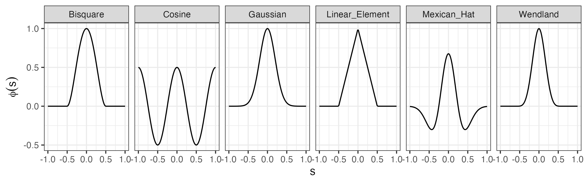
Assuming interest in the spatio-temporal dependence at \(n\) spatial locations \(\{\mathbf{s}_1,\ldots,\mathbf{s}_n\}\) and at times \(\{t_j: j=1,2,\ldots,T\}\), we can write model Equation 4.29 in vector form as
\[ \mathbf{Y}_{t_j} = \mathbf{X}_{t_j} \boldsymbol{\beta}+ \boldsymbol{\Phi}\boldsymbol{\alpha}_{t_j} + \boldsymbol{\nu}_{t_j}, \tag{4.30}\]
where \(\mathbf{Y}_{t_j}= (Y(\mathbf{s}_1;t_j),\ldots,Y(\mathbf{s}_n;t_j))'\) is the \(n\)-dimensional process vector, \(\boldsymbol{\nu}_{t_j} \; \sim \; Gau({\mathbf{0}},\mathbf{C}_\nu)\), \(\boldsymbol{\alpha}_{t_j} \equiv (\alpha_{1}(t_j),\ldots,\alpha_{n_\alpha}(t_j))'\), \(\boldsymbol{\Phi}\equiv (\boldsymbol{\phi}(\mathbf{s}_1),\ldots,\boldsymbol{\phi}(\mathbf{s}_n))'\), and \(\boldsymbol{\phi}(\mathbf{s}_i) \equiv (\phi_1(\mathbf{s}_i),\ldots,\phi_{n_\alpha}(\mathbf{s}_i))'\), \(i=1,\ldots,n\). An important question is then what the preferred distribution for \(\boldsymbol{\alpha}_{t_j}\) is.
It can be shown that if \(\boldsymbol{\alpha}_{t_1}, \boldsymbol{\alpha}_{t_2},\ldots\) are independent in time, where \(\boldsymbol{\alpha}_{t_j} \sim iid \; Gau({\mathbf{0}},\mathbf{C}_\alpha)\), then the marginal distribution of \(\mathbf{Y}_{t_j}\) is \(Gau(\mathbf{X}_{t_j} \boldsymbol{\beta}, \boldsymbol{\Phi}\mathbf{C}_\alpha \boldsymbol{\Phi}' + \mathbf{C}_\nu)\), and \(\mathbf{Y}_{t_1}, \mathbf{Y}_{t_2},\ldots\) are independent. Hence, the \(nT \times nT\) joint spatio-temporal covariance matrix is given by the , \(\mathbf{C}_Y = \mathbf{I}_T \otimes (\boldsymbol{\Phi}\mathbf{C}_\alpha \boldsymbol{\Phi}' + \mathbf{C}_\nu)\), where \(\mathbf{I}_T\) is the \(T\)-dimensional identity matrix (see Note 4.1). So the independence-in-time assumption implies a simple separable spatio-temporal dependence structure. To model a more complex spatio-temporal dependence structure using spatial-only , one must specify the model for the random coefficients such that \(\{\boldsymbol{\alpha}_{t_j}: j=1,\ldots,T\}\) are dependent in time. This is simplified by assuming conditional temporal dependence (dynamics) as discussed in Chapter 5.
4.4.3 Random Effects with Temporal Basis Functions
We can also express the spatio-temporal random process in terms of temporal and spatially indexed random effects:
\[ Y(\mathbf{s};t) = \mathbf{x}(\mathbf{s};t)' \boldsymbol{\beta}+ \sum_{i=1}^{n_\alpha} \phi_{i}(t) \alpha_i(\mathbf{s}) + \nu(\mathbf{s};t), \tag{4.31}\]
where \(\{\phi_{i}(t): i=1,\ldots,n_\alpha;\ t \in D_t\}\) are temporal and \(\{\alpha_i(\mathbf{s})\}\) are their spatially indexed random coefficients. In this case, one could model \(\{\alpha_i(\mathbf{s}): \mathbf{s}\in D_s;\ i=1,\ldots,n_\alpha\}\) using multivariate geostatistics. The temporal-basis-function representation given in Equation 4.31 is not as common in spatio-temporal statistics as the spatial-basis-function representation given in Equation 4.29. This is probably because most spatio-temporal processes have a scientific interpretation of spatial processes evolving in time. However, this need not be the case, and temporal are increasingly being used to model non-stationary-in-time processes (e.g., complex seasonal or high-frequency time behavior) that vary across space.
Example Using Temporal Basis Functions
Spatio-temporal modeling and prediction using temporal can be carried out with the package SpatioTemporal (see Lab 4.3). In the top panel of Figure 4.8 we show the three temporal used to model maximum temperature in the NOAA data set. These were obtained following a procedure similar to EOF analysis, which is described in Note 2.2. Note that the basis function \(\phi_1(t) = 1\) is time-invariant.
Once \(\phi_1(t), \phi_2(t)\), and \(\phi_3(t)\) are selected, estimates (e.g., ordinary least squares) of \(\alpha_1(\mathbf{s}), \alpha_2(\mathbf{s})\), and \(\alpha_3(\mathbf{s})\) can be found and used to indicate how they might be modeled. For example, in Lab 4.3 we see that while both \(\alpha_1(\mathbf{s})\) and \(\alpha_2(\mathbf{s})\) have a latitudinal trend, \(\alpha_3(\mathbf{s})\) does not. Assigning these fields exponential covariance functions, we obtain the models:
\[ E(\alpha_1(\mathbf{s})) = \alpha_{11} + \alpha_{12}s_2, \quad \textrm{cov}(\alpha_1(\mathbf{s}), \alpha_1(\mathbf{s}+ \mathbf{h})) = \sigma^2_1 \exp(-\|\mathbf{h}\|/r_1), \tag{4.32}\]
\[ E(\alpha_2(\mathbf{s})) = \alpha_{21} + \alpha_{22}s_2, \quad \textrm{cov}(\alpha_2(\mathbf{s}), \alpha_2(\mathbf{s}+ \mathbf{h})) = \sigma^2_2 \exp(-\|\mathbf{h}\|/r_2), \tag{4.33}\]
\[ E(\alpha_3(\mathbf{s})) = \alpha_{31}, \quad\qquad~~~~~~~ \textrm{cov}(\alpha_3(\mathbf{s}), \alpha_3(\mathbf{s}+ \mathbf{h})) = \sigma^2_3 \exp(-\|\mathbf{h}\|/r_3), \tag{4.34}\]
where \(s_2\) denotes the latitude coordinate at \(\mathbf{s}= (s_1, s_2)'\), \(r_1, r_2\), and \(r_3\) are scale parameters, and \(\sigma^2_1, \sigma^2_2\), and \(\sigma^2_3\) are stationary variances. We further assume that \(\textrm{cov}(\alpha_k(\mathbf{s}),\alpha_{\ell}(\mathbf{s}')) = 0\) for \(k \neq \ell\), which is a strong assumption.
Using maximum likelihood to estimate all unknown parameters and “plugging” the estimates in, the resulting prediction is the spatio-temporal smoothed map, \(E(Y(\cdot;\cdot)\mid \mathbf{Z})\), obtained from maps of \(E(\alpha_1(\cdot)\mid \mathbf{Z}), E(\alpha_2(\cdot)\mid \mathbf{Z})\), and \(E(\alpha_3(\cdot)\mid \mathbf{Z})\), which can all be written in closed form. We show the first three basis-function times series in the top panel of Figure 4.8 and the predicted spatial maps (i.e., the basis-function coefficients), corresponding to these three basis functions in the bottom panel. Note how \(E(\alpha_1(\cdot) \mid \mathbf{Z})\) picks up the latitude component evident in the NOAA maximum-temperature data. On the other hand, the fields \(E(\alpha_2(\cdot) \mid \mathbf{Z})\) and \(E(\alpha_3(\cdot)\mid \mathbf{Z})\) appear to capture oblique and longitudinal trends that have not been considered up to now, but with much smaller magnitudes. Although not shown here, these predictions of the basis-function coefficients \(\alpha_1(\cdot)\), \(\alpha_2(\cdot)\), and \(\alpha_3(\cdot)\) have associated uncertainties and those can be plotted as prediction standard-error maps as well.
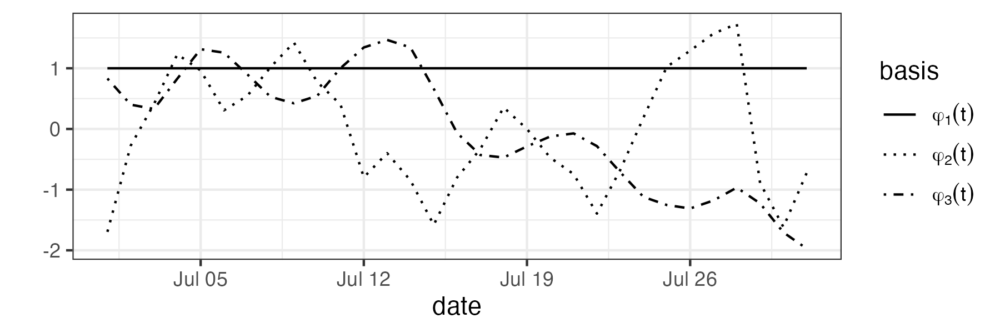
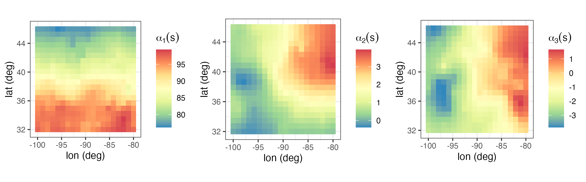
4.4.4 Confounding of Fixed Effects and Random Effects
Consider the general mixed-effects representation given in Equation 4.28:
\[ \mathbf{Y}= \mathbf{X}\boldsymbol{\beta}+ \boldsymbol{\Phi}\boldsymbol{\alpha}+ \boldsymbol{\nu},\quad \boldsymbol{\nu}\; \sim \; Gau({\mathbf{0}}, \mathbf{C}_\nu), \]
and recall that \(\mathbf{Z}= \mathbf{Y}+ \boldsymbol{\varepsilon}\). Although the columns of \(\boldsymbol{\Phi}\) are , they are indexed in space and time in the same way that the columns of \(\mathbf{X}\) are. Then, depending on the structure of the columns in these two matrices, it is quite possible that the random effects can be confounded with the fixed effects, similarly to the way extreme can affect the estimation of fixed effects in traditional regression (recall Section 3.2.2). This suggests that if primary interest is in inference on the fixed-effect parameters (\(\boldsymbol{\beta}\)), then one should mitigate potential associated with the random effects. As with , if the columns of \(\boldsymbol{\Phi}\) and \(\mathbf{X}\) are linearly independent, then there is no concern about . This has led to mitigation strategies that tend to restrict the random effects by selecting in \(\boldsymbol{\Phi}\) that are orthogonal to the column space of \(\mathbf{X}\) (or approximately so). If prediction of the hidden process \(\mathbf{Y}\) is the primary goal, one is typically much less concerned about potential confounding.
4.5 Non-Gaussian Data Models with Latent Gaussian Processes
There is only one way to be Gaussian, but an infinite number of ways to be non-Gaussian! This is a challenge that we address in this section through the use of hierarchical statistical models. The modeling paradigm that we follow is to find a Gaussian process, possibly deep in the hierarchy, that describes the spatio-temporal behavior of a hidden process or of parameters that vary with space and time. The marginal distribution of the data is then non-Gaussian, but somewhere there is a Gaussian process that results in spatio-temporal dependence in the data through marginalization.
The examples presented thus far in this chapter have all assumed additive Gaussian error and random-effects distributions. Many spatio-temporal problems of interest deal with distinctly non-Gaussian data (e.g., counts, binary responses, extreme values). One of the most useful aspects of the hierarchical-modeling paradigm is that it allows one to accommodate fairly easily non-Gaussian data models, so long as the observations are conditionally independent, conditional on latent dependent Gaussian processes. This is the spatio-temporal manifestation of traditional generalized linear mixed models (GLMMs) and generalized additive mixed models (GAMMs) in statistics. That is, the likelihood assumes that the observations are conditionally independent given a spatio-temporal mean response that is some transformation of an additive mixed model. Our situation is a bit more flexible than the GLMM and GAMM in that our data model does not necessarily have to be from the , so long as we can allow conditional independence in the observations conditioned on spatio-temporal structure in the hidden process (and/or the associated process parameters).
As an example, consider a data model from the exponential family as in Section 3.4.1, such that
\[ Z(\mathbf{s};t) \mid Y(\mathbf{s};t), \gamma \; \sim \; \text{indep.} \; EF(Y(\mathbf{s};t), \gamma), \quad \mathbf{s}\in D_s,~t \in D_t, \tag{4.35}\]
where \(EF\) corresponds to a distribution from the exponential family with scale parameter \(\gamma\) and mean \(Y(\mathbf{s};t)\). In Section 3.4.1, we modeled a transformation of the mean response in terms of additive fixed effects (e.g., a linear combination of covariates). Here, we extend that and model the transformed mean response in terms of additive fixed effects and random effects,
\[ g(Y(\mathbf{s};t)) = \mathbf{x}(\mathbf{s};t)' \boldsymbol{\beta}+ \eta(\mathbf{s};t),\quad \mathbf{s}\in D_s, t \in D_t, \]
where \(g(\cdot)\) is a specified monotonic link function, \(\mathbf{x}(\mathbf{s};t)\) is a \(p\)-dimensional vector of covariates for spatial location \(\mathbf{s}\) and time \(t\), and \(\eta(\mathbf{s};t)\) is a spatio-temporal Gaussian random process that can be modeled either in terms of spatio-temporal covariances (as in Section 4.2), a special case of which uses a basis-function expansion (Section 4.3), or as a dynamic spatio-temporal process (Chapter 5). The same modeling issues associated with this latent Gaussian spatio-temporal process are present here as with the Gaussian-data case, but estimation of parameters and prediction of \(Y(\mathbf{s}_0;t_0)\) are typically more involved given the non-Gaussian data model.
As an illustration, a simple model involving spatio-temporal count data could be represented by
\[ \mathbf{Z}_t \mid \mathbf{Y}_t \; \sim \; \text{indep.} \; \text{Poi}(\mathbf{Y}_t), \]
\[ \log(\mathbf{Y}_t) = \mathbf{X}_t \boldsymbol{\beta}+ \boldsymbol{\Phi}_t \boldsymbol{\alpha}_t + \boldsymbol{\nu}_t, \]
where \(\mathbf{Z}_t\) is an \(m_t\)-dimensional data vector of counts at \(m_t\) spatial locations, \(\mathbf{Y}_t\) represents the latent spatio-temporal mean process at \(m_t\) locations, \(\boldsymbol{\Phi}_t\) is an \(m_t \times n_\alpha\) matrix of \(n_\alpha\) spatial , and the associated random coefficients are modeled as \(\boldsymbol{\alpha}_t \; \sim \; \text{Gau}({\mathbf{0}},\mathbf{C}_\alpha)\), independent in time, with micro-scale error term \(\boldsymbol{\nu}_t \; \sim \; \text{indep.} \; \text{Gau}({\mathbf{0}},\sigma^2_\nu \mathbf{I})\); that is, \(\mathbf{C}_\nu = \sigma^2_\nu \mathbf{I}\). As discussed in Section 4.4.2, it is often more realistic to consider temporal dependence through a dynamic model on \(\{\boldsymbol{\alpha}_t\}\), which will be explored in Chapter 5. As was the case for the Gaussian data models in Section 4.1–Section 4.4, the parameters \(\boldsymbol{\beta}\) and \(\boldsymbol{\theta}\) (in \(\mathbf{C}_\alpha\) and \(\mathbf{C}_\nu\)) could be estimated or a prior distribution could be put on them.
4.5.1 Generalized Additive Models (GAMs)
We often seek more flexible models that can accommodate nonlinear structure in the mean function. Recall from Section 3.4.1 that one successful approach to this problem has been through the use of GAMs. In general, these models consider a transformation of the mean response to have an additive form in which the additive components are smooth functions (e.g., splines) of the covariates, where generally the functions themselves are expressed as basis-function expansions. In practical applications, the basis coefficients are treated as random coefficients in the estimation procedure. However, just as one can add random effects to generalized linear models (GLMs) to get generalized linear mixed models (GLMMs), one can also add (additional) random effects to GAMs to get generalized additive mixed models (GAMMs).
For example, consider data model (Equation 4.35). Similarly to Equation 3.12, we can write the transformed mean response additively as
\[ g(Y(\mathbf{s};t)) = \mathbf{x}(\mathbf{s};t)' \boldsymbol{\beta}+ \sum_{i=1}^{n_f} f_i(\mathbf{x}(\mathbf{s};t);\mathbf{s};t) + \nu(\mathbf{s};t), \tag{4.36}\]
where again \(g(\cdot)\) is a specified monotonic ; \(\mathbf{x}(\mathbf{s};t)\) is a \(p\)-dimensional vector of covariates for spatial location \(\mathbf{s}\) and time \(t\); \(f_i(\cdot)\) are functions of the covariates, the spatial locations, and the time index; and \(\nu(\mathbf{s};t)\) is a spatio-temporal random effect. Typically, the functions \(f_i(\cdot)\) are modeled in terms of a truncated basis-function expansion; for example, \(f_i(x_1(\mathbf{s};t);\mathbf{s};t) = \sum_{k=1}^{q_i} \phi_k(x_1(\mathbf{s};t);\mathbf{s};t) \alpha_{ik}\). Thus, we can see that the basis-function expansions with random coefficients given in Equation 4.27, Equation 4.29, and Equation 4.31 are essentially GAMMs. But, whereas in those models the smooth functions are typically only a function of spatio-temporal location, spatial location, or time, respectively, it is more common in the GAM/GAMM setting to allow the to also depend nonlinearly on covariates. On the other hand, GAM/GAMMs typically assume that the are smooth functions, whereas there is no such requirement for spatio-temporal-basis-function models. GAM/GAMMs can easily be implemented in R (e.g., we provide an example with the mgcv package in Lab 4.4).
4.5.2 Inference for Spatio-Temporal Hierarchical Models
Implicit in the estimation associated with the linear Gaussian spatio-temporal model discussed in Section 4.2.3 is that the covariance and fixed-effects parameters can be estimated more easily when we marginalize (integrate) out the latent Gaussian spatio-temporal process. In general, the likelihood is
\[ [\mathbf{Z}\mid \boldsymbol{\theta}, \boldsymbol{\beta}] = \int [\mathbf{Z}\mid \mathbf{Y}, \boldsymbol{\theta}][\mathbf{Y}\mid \boldsymbol{\theta}, \boldsymbol{\beta}] \textrm{d}\mathbf{Y}, \tag{4.37}\]
viewed as a function of \(\boldsymbol{\theta}\) and \(\boldsymbol{\beta}\). For linear mixed models (Section 4.1–Section 4.4), we assumed that the two distributions inside the integral in Equation 4.37 were Gaussian with linear relationships; this implied that the marginal likelihood function was in the form of a Gaussian density (e.g., Note 4.3), and thus can be written in closed form. More generally, we can relax the Gaussian assumption for the data model and, in the models presented here, the latent Gaussian spatio-temporal process \(\mathbf{Y}\) is transformed through a nonlinear link function. This lack of Gaussianity and the presence of nonlinearity complicates the analysis, as generally the likelihood Equation 4.37 cannot be obtained in closed form.
The integral in Equation 4.37 can in principle be evaluated numerically, from which one can estimate the relatively few fixed effects and covariance parameters \(\{\boldsymbol{\beta}, \boldsymbol{\theta}\}\) through numerical optimization. In spatio-temporal models this is complicated by the high dimensionality of the integral; recall that \(\mathbf{Y}\) is a \((\sum_{t=1}^T m_t)\)-dimensional vector. Traditional approaches to this problem are facilitated by the usual conditional-independence assumption in the data model and by exploiting the latent Gaussian nature of the random effects. These approaches include methods such as Laplace approximation, quasi-likelihood, generalized estimating equations, pseudo-likelihood, and penalized quasi-likelihood. For example, recent advances in automatic differentiation have led to very efficient Laplace approximation approaches for performing inference with such likelihoods, even when there are a very large number of random effects (see, for example, the Template Model Builder (TMB) R package). Although these methods are increasingly being used successfully in the spatial context, there has tended to be more focus on Bayesian estimation approaches for spatio-temporal models in the literature. Either way, some type of approximation is needed (approximating the integrals, approximating the models using linearization, or approximating the posterior distribution through various Bayesian computational methods).
Bayesian Hierarchical Modeling
The hierarchical model (BHM) paradigm provides the estimation and inferential framework for many complex spatio-temporal models in the literature. Recall from Note 1.1 that we can decompose an arbitrary joint distribution in terms of a hierarchical sequence of conditional distributions and a marginal distribution; for example,
\[ [A,B,C] = [A \mid B, C] [B \mid C][C]. \]
In the context of our general spatio-temporal model given in Section 4.2,
\[ [\mathbf{Z}, \mathbf{Y},\boldsymbol{\beta},\boldsymbol{\theta}] = [\mathbf{Z}\mid \mathbf{Y}, \boldsymbol{\beta},\boldsymbol{\theta}][\mathbf{Y}\mid \boldsymbol{\beta}, \boldsymbol{\theta}][\boldsymbol{\beta}\mid \boldsymbol{\theta}][\boldsymbol{\theta}] = [\mathbf{Z}\mid \mathbf{Y}, \boldsymbol{\theta}_\epsilon][\mathbf{Y}\mid \boldsymbol{\beta}, \boldsymbol{\theta}_y][\boldsymbol{\theta}_\epsilon][\boldsymbol{\theta}_y][\boldsymbol{\beta}], \]
where \(\boldsymbol{\theta}\) contains all of the variance and covariance parameters from the data model and the process model. Note that the first equality is based on the probability decomposition and the second equality is based on writing \(\boldsymbol{\theta}=\{\boldsymbol{\theta}_\epsilon, \boldsymbol{\theta}_y\}\) and assuming that \(\boldsymbol{\beta}\), \(\boldsymbol{\theta}_\epsilon\), and \(\boldsymbol{\theta}_y\) are independent a priori. Now, Bayes’ Rule implies that
\[ [\mathbf{Y}, \boldsymbol{\beta}, \boldsymbol{\theta}\mid \mathbf{Z}] \propto [\mathbf{Z}\mid \mathbf{Y}, \boldsymbol{\theta}_\epsilon][\mathbf{Y}\mid \boldsymbol{\beta}, \boldsymbol{\theta}_y][\boldsymbol{\beta}][\boldsymbol{\theta}_\epsilon][\boldsymbol{\theta}_y]. \tag{4.38}\]
For example, in the linear Gaussian case, \([\mathbf{Z}\mid \mathbf{Y}, \boldsymbol{\theta}_\epsilon]\) is given by Equation 4.3 and \([\mathbf{Y}\mid \boldsymbol{\beta}, \boldsymbol{\theta}_y]\) is given by Equation 4.4. The prior distributions \([\boldsymbol{\beta}]\), \([\boldsymbol{\theta}_\epsilon]\), and \([\boldsymbol{\theta}_y]\) are then specified according to the particular modeling choices made.
If we are interested in inference on the parameters, then we focus on the posterior distribution, \([\boldsymbol{\beta}, \boldsymbol{\theta}\mid \mathbf{Z}]\); if our interest is in prediction, we focus on the predictive distribution, \([\mathbf{Y}\mid \mathbf{Z}]\). In principle, we can obtain these posterior distributions if we can evaluate the normalizing constant in Equation 4.38, which is a function of the data \(\mathbf{Z}\), specifically, the marginal distribution \([\mathbf{Z}]\). However, in the general spatio-temporal case (and in most hierarchical models) there is no analytical form for this normalizing constant, and one must use numerical approximations. A common and useful approach is to use Markov chain Monte Carlo (MCMC) techniques to obtain (Markov dependent) Monte Carlo (MC) samples from the posterior distribution and then to perform inference on the parameters and prediction of the hidden process by summarizing these MC samples (see Note 4.5 for a basic MCMC algorithm). The advantage of the BHM approach is that parameter uncertainty is accounted for directly. But, there is no “free lunch,” and this usually comes at a cost of greater computational complexity.
In cases where the BHM computational complexity is formidable, one can sometimes find approximations that help simplify the computational burden. For example, just as penalized-quasi-likelihood methods use Laplace approximations to deal with the integral in Equation 4.37, the integrated nested Laplace approximation (INLA) approach is sometimes well suited for latent Gaussian spatial and spatio-temporal processes. The method exploits the Laplace approximation in Bayesian latent-Gaussian models and does not require generating samples from the posterior distribution. Hence, it can often be used for quite large data sets at reasonable computational expense. We use INLA to fit a latent separable spatio-temporal model in Lab 4.5.
Another way to mitigate the computational burden of a BHM is to obtain estimates \(\widehat{\boldsymbol{\theta}}\) of the parameters \({\boldsymbol{\theta}}\) outside of the fully Bayesian model as in empirical Bayesian estimation (e.g., Carlin and Louis 2010). As mentioned in Chapter 1, N. Cressie and Wikle (2011) (pp. 23–24) call this approach empirical hierarchical modeling in the spatio-temporal context. In this case, one focuses on the “empirical predictive distribution,” \([\mathbf{Y}\mid \mathbf{Z}, \widehat{\boldsymbol{\theta}}]\). The primary example of this in spatio-temporal statistics is S-T kriging as discussed in Section 4.2. That is, rather than assigning prior distributions to the parameters, they are estimated and the estimates are “plugged in” to the closed-form kriging formulas. This typically has the advantage of substantially less computational burden but at a cost of overly liberal uncertainty quantification. Ideally, one should take additional steps to account for the uncertainty associated with using these plug-in estimates (e.g., via the bootstrap).
Note 4.5: Basic Gibbs Sampler MCMC Algorithm
Consider the joint posterior distribution of \(K\) random variables, \(w_1, \ldots, w_K\), given data, \(\mathbf{Z}\), which we denote as \([w_1, \ldots, w_K \; | \; \mathbf{Z}]\). As is typical, assume that we do not know the normalizing constant for this posterior distribution. Markov chain Monte Carlo (MCMC) approaches can be used to obtain samples from such distributions indirectly. Specifically, rather than compute the posterior distribution directly, one computes successive simulations from a Markov chain constructed so that samples from the stationary distribution of this chain are equivalent to samples from the target posterior distribution. That is, after some “burn-in” time, samples of the chain are viewed as samples simulated from the posterior distribution. Note that these samples are statistically dependent. The posterior distribution can be explored by various Monte Carlo summaries of the MCMC samples.
One of the simplest MCMC algorithms is the Gibbs sampler, which is most appropriate when the distributions of each of the random variables conditioned on all of the others and the data (the “full-conditional” distributions) are available in closed form. For a basic overview, see Gelman et al. (2014). A generic Gibbs sampler algorithm is given below.
An initial step in the Gibbs sampler algorithm is to derive all of the full conditional distributions in closed form. That is, derive
\[ [w_1 | w_2,\ldots,w_K, \mathbf{Z}], \; [w_2 | w_1, w_3,\ldots,w_K, \mathbf{Z}], \ldots, [w_K | w_1, w_2,\ldots,w_{K-1}, \mathbf{Z}]. \]
Obtain starting values: \(\{w_1^{(0)}, \ldots, w_K^{(0)}\}\)
for \(i=1,2,\ldots, N_{\mathrm{gibbs}}\) do
- Sample \(w_1^{(i)} \sim [w_1 | w_2^{(i-1)}, \ldots, w_K^{(i-1)}, \mathbf{Z}]\)
- Sample \(w_2^{(i)} \sim [w_2 | w_1^{(i)}, w_3^{(i-1)}, \ldots, w_K^{(i-1)}, \mathbf{Z}]\)
…
K. Sample \(w_K^{(i)} \sim [w_K | w_1^{(i)}, \ldots, w_{K-1}^{(i)}, \mathbf{Z}]\)
end for
Discard the first \(b\) “burn-in” samples and use the remaining \(b+1,\ldots,N_{\mathrm{gibbs}}\) samples as though they are coming from the posterior distribution \([w_1,\ldots,w_K | \mathbf{Z}]\).
Note that this is one of the most basic MCMC algorithms. Many modifications exist to improve efficiency and deal with the common case where the full conditional distributions are not available in closed form (see, for example, Gelman et al. 2014).
4.6 Chapter 4 Wrap-Up
Time marches forward, but it can be valuable to look back at a changing landscape over a period of time. We can describe how space and time interact using spatio-temporal mean and covariance functions, without having to commit to a mechanistic model that expresses the interaction dynamically. Hence, in this chapter we considered spatio-temporal modeling using what we have called the “descriptive” approach. Importantly, we made a clear distinction between the data and the underlying that represents the real-world process upon which measurements were taken. That is, we need to think conditionally! Thus, we considered a data model where the conditional distribution was Gaussian and where the conditional distribution was non-Gaussian. In both cases, we conditioned on a latent Gaussian spatio-temporal process.
We also considered the latent spatio-temporal Gaussian process by specifying the first-order (mean) structure in terms of exogenous covariates (including functions of locations of space or time) and the second-order dependence in terms of spatio-temporal covariance functions. We discussed various assumptions for such models related to stationarity, separability, and full symmetry. These sorts of representations are ideally suited for problems where there are not too many observations or locations in time and space at which one wants to predict, and where either we feel comfortable that we know the dependence structure (and can represent it by covariance functions), or we just want to account for dependence and do not care so much that the model is not all that realistic. In situations with large data sets and/or large numbers of prediction locations, it is often more efficient computationally to consider random-effects representations of the second-order structure using basis-function expansions. The basis-function construction also frees the modeler from having to develop valid spatio-temporal covariance functions, as our conditional basis-function random effects induce a valid marginal covariance function. We considered this from the perspective of that are defined in space and time, in space only, and in time only. The descriptive-modeling framework is similar for each. In addition, we briefly showed how these spatio-temporal mixed models using are related to GAM/GAMMs, depending on the choice of and the estimation approach. An overview of GAMs can be found in Wood (2017).
A potential issue with performing parameter inference in descriptive models with spatial or spatio-temporal random effects is the problem of . Traditionally, this has not been as big a concern in spatial and spatio-temporal statistics because the focus has been on prediction. But, as these methods have increasingly been used to account for dependence when interpreting fixed effects, has received much more attention Hodges and Reich (2010); Hughes and Haran (2013); Hanks et al. (2015).
An overview of computation for spatial and spatio-temporal descriptive models is presented in P. J. Diggle and Ribeiro Jr. (2007) and Banerjee, Carlin, and Gelfand (2015). The INLA approximate- methodology is discussed in Rue, Martino, and Chopin (2009), Lindgren, Rue, and Lindström (2011), Blangiardo and Cameletti (2015), and Krainski et al. (2019). Descriptive models that can be formulated using simple dynamic equations in a Bayesian framework can also be implemented using spTimer Bakar and Sahu (2015) and the function spDynLM in spBayes Finley, Banerjee, and Carlin (2007). Computational methods for non-Bayesian approaches to non-Gaussian spatial data can be found in Schabenberger and Gotway (2005). An overview on using R to perform some exploratory and geostatistical modeling for spatio-temporal data can be found in RESSTE Network et al. (2017).
There are a number of informative books on spatio-temporal statistical methodology. These include Le and Zidek (2006), N. Cressie and Wikle (2011), Sherman (2011), Blangiardo and Cameletti (2015), Peter J. Diggle (2013), Mateu and Müller (2013), Baddeley, Rubak, and Turner (2015), Banerjee, Carlin, and Gelfand (2015), Montero, Fernández-Avilés, and Mateu (2015), Shaddick and Zidek (2015), and Christakos (2017).
One of the most challenging aspects of characterizing the spatio-temporal dependence structure, from either the marginal-covariance-model perspective or the conditional-basis-function perspective, is the ability to model real-world interactions that occur across time and space. In that case, the underlying processes are often best described by spatial fields that evolve through time according to “rules” that govern the spatio-temporal variability. That is, they represent a dynamical system. As we shall see in Chapter 5, spatio-temporal models that explicitly account for these dynamics offer the benefit of providing more realistic models in general, and they can simplify model construction and estimation through conditioning.
Lab 4.1: Spatio-Temporal Kriging with gstat
In this Lab we go through the process of carrying out spatio-temporal universal kriging using the semivariogram with the package gstat. We focus on the maximum temperature data in the NOAA data set (Tmax) in July 1993. In addition to the packages used in Chapter 2 for data wrangling, we need RColorBrewer to color some of the surfaces that will be produced.
For S-T kriging of the maximum-temperature data set in July 1993, we need to fit a parametric function to the empirical semivariogram vv computed in Lab 2.3. The code is reproduced below for completeness.
data("STObj3", package = "STRbook")
STObj4 <- STObj3[, "1993-07-01::1993-07-31"]
vv <- variogram(object = z ~ 1 + lat, # fixed effect component
data = STObj4, # July data
width = 80, # spatial bin (80 km)
cutoff = 1000, # consider pts < 1000 km apart
tlags = 0.01:6.01) # 0 days to 6 daysA number of covariance-function models are available with the package gstat; see the gstat vignette “spatio-temporal-kriging” for details by typing
vignette("spatio-temporal-kriging")The first semivariogram we consider here corresponds to the spatio-temporal separable covariance function in Equation 4.18 and Equation 4.19. Observe from the vignette that a separable covariance function Equation 4.18 corresponds to a semivariogram of the form
\[ \gamma^{\mathrm{sep}}(\mathbf{h}; \tau) = \mathrm{sill}\cdot\left(\bar\gamma^{(s)}(\| \mathbf{h}\|) + \bar\gamma^{(t)}(|\tau|) - \bar\gamma^{(s)}(\| \mathbf{h}\|)\bar\gamma^{(t)}(|\tau|)\right), \]
where the “standardized” semivariograms \(\bar\gamma^{(s)}\) and \(\bar\gamma^{(t)}\) have separate nugget effects and sills equal to 1.
A spatio-temporal semivariogram is constructed with gstat using the function vgmST. The argument stModel = "separable" is used to define a separable model, while the function vgm is used to construct the individual semivariograms (one for space and one for time). Several arguments can be passed to vgm. The first four, which we use below, correspond to the partial sill, the model type, the range, and the nugget, respectively. The argument sill that is supplied to vgmST defines the joint spatio-temporal sill. The numbers used in their definition are initial values supplied to the optimization routine used for fitting in the function fit.StVariogram, which fits sepVgm to vv. These initial values should be reasonable – for example, the length scale \(\phi\) can be set to a value that spans 10% of the spatial/temporal domain, and the variances/sills can be set such that they have similar orders of magnitude to the total variance of the measurements.
sepVgm <- vgmST(stModel = "separable",
space = vgm(10, "Exp", 400, nugget = 0.1),
time = vgm(10, "Exp", 1, nugget = 0.1),
sill = 20)
sepVgm <- fit.StVariogram(vv, sepVgm)The second model we fit has the covariance function given in Equation 4.20. For this model, the function vgmST takes the joint semivariogram as an argument, as well as the sill (sill) and the scaling factor (stAni), denoted by \(a\) in \(\mathbf{v}\), defined just below Equation 4.20. This parameter can be initially set by considering orders of magnitudes – if the spatial field is evolving on scales of the order of hundreds of kilometers and the temporal evolution has a scale on the order of days, then an initial value of stAni = 100 is reasonable.
metricVgm <- vgmST(stModel = "metric",
joint = vgm(100, "Exp", 400, nugget = 0.1),
sill = 10,
stAni = 100)
metricVgm <- fit.StVariogram(vv, metricVgm)We can compare the fits of the two semivariograms by checking the mean squared error of the fits. These can be found by directly accessing the final function value of the optimizer used by fit.StVariogram.
metricMSE <- attr(metricVgm, "optim")$value
sepMSE <- attr(sepVgm, "optim")$valueHere the variable metricMSE is 2.1 while sepMSE is 1.4, indicating that the separable semivariogram gives a better fit to the empirical semivariogram in this case. The fitted semivariograms can be plotted using the standard plot function.
plot(vv, list(sepVgm, metricVgm), main = "Semi-variance")Contour plots of the fitted variograms are shown in the bottom panels of Figure 4.4. The corresponding stationary S-T covariance function is obtained from Equation 4.15.
Next, we use the fitted S-T covariance models for prediction using S-T kriging, in this case universal S-T kriging since we are treating the latitude coordinate as a covariate. First, we need to create a space-time prediction grid. For our spatial grid, we consider 20 spatial locations between 100°W and 80°W, and 20 spatial locations between 32°N and 46°N. In the code below, when converting to SpatialPoints, we ensure that the coordinate reference system (CRS) of the prediction grid is the same as that of the observations.
spat_pred_grid <- expand.grid(
lon = seq(-100, -80, length = 20),
lat = seq(32, 46, length = 20)) %>%
SpatialPoints(proj4string = CRS(proj4string(STObj3)))
gridded(spat_pred_grid) <- TRUEFor our temporal grid, we consider six equally spaced days in July 1993.
temp_pred_grid <- as.Date("1993-07-01") + seq(3, 28, length = 6)We can then combine spat_pred_grid and temp_pred_grid to construct an STF object for our space-time prediction grid.
DE_pred <- STF(sp = spat_pred_grid, # spatial part
time = temp_pred_grid) # temporal partSince there are missing observations in STObj4, we first need to cast STObj4 into either an STSDF or an STIDF, and remove the data recording missing observations. For simplicity here, we consider the STIDF (considering STSDF would be around twice as fast). Also, in order to show the capability of S-T kriging to predict across time, we omitted data on 14 July 1993 from the data set.
STObj5 <- as(STObj4[, -14], "STIDF") # convert to STIDF
STObj5 <- subset(STObj5, !is.na(STObj5$z)) # remove missing dataNow we can call krigeST using STObj5 as our data.
pred_kriged <- krigeST(z ~ 1 + lat, # latitude trend
data = STObj5, # data set w/o 14 July
newdata = DE_pred, # prediction grid
modelList = sepVgm, # semivariogram
computeVar = TRUE) # compute variancesTo plot the predictions and accompanying prediction standard errors, it is straightforward to use the function stplot. First, we define our color palette using the function brewer.pal and the function colorRampPalette (see help files for details on what these functions do).
color_pal <- rev(colorRampPalette(brewer.pal(11, "Spectral"))(16))Second, we call the stplot function with the object containing the results.
stplot(pred_kriged,
main = "Predictions (degrees Fahrenheit)",
layout = c(3, 2),
col.regions = color_pal)The prediction (kriging) standard errors can be plotted in a similar way.
pred_kriged$se <- sqrt(pred_kriged$var1.var)
stplot(pred_kriged[, , "se"],
main = "Prediction std. errors (degrees Fahrenheit)",
layout = c(3, 2),
col.regions = color_pal)Spatio-temporal kriging as shown in this Lab is relatively quick and easy to implement for small data sets, but it starts to become prohibitive as data sets grow in size, unless some approximation is used. For example, the function krigeST allows one to use the argument nmax to determine the maximum number of observations to use when doing prediction. The predictor is no longer optimal, but it is close enough to the optimal predictor in many cases of practical interest.
Lab 4.2: Spatio-Temporal Basis Functions with FRK
In this Lab we shall focus on modeling the maximum temperature in July 1993 from data in the NOAA data set using spatio-temporal basis functions. The packages we need are the following:
library("dplyr")
library("FRK")
library("ggplot2")
library("gstat")
library("RColorBrewer")
library("sp")
library("spacetime")
library("STRbook")
library("tidyr")The package FRK implements a low-rank approach to spatial and spatio-temporal modeling known as fixed rank kriging (FRK). FRK considers the random-effects model Equation 4.27, sometimes known as the spatio-temporal random-effects model (Noel Cressie, Shi, and Kang 2010), and provides functionality to the user for choosing the basis functions \(\{\phi_i(\mathbf{s};t) : i = 1,\dots,n_\alpha\}\) from the data.
A key difference between FRK and other geostatistical packages is that, in FRK, modeling and prediction are carried out on a fine, regular discretization of the spatio-temporal domain. The small grid cells are known as basic areal units (BAUs), and their primary utility is to account for problems of change of support (varying measurement footprint), which we do not consider in this Lab. The package is loaded by typing in the console
library("FRK")For spatio-temporal modeling and prediction, FRK requires the user to provide the point-level data as objects of class STIDF. Hence, for this exercise, we use STObj5 from Lab 3.1, which we reconstruct below (for completeness) from STObj3.
data("STObj3", package = "STRbook") # load STObj3
STObj4 <- STObj3[, "1993-07-01::1993-07-31"] # subset time
STObj5 <- as(STObj4[, -14], "STIDF") # omit t = 14
STObj5 <- subset(STObj5, !is.na(STObj5$z)) # remove NAs
proj4string(STObj5) <- CRS("+proj=longlat +ellps=WGS84 +no_defs")The spatio-temporal BAUs are constructed using the function auto_BAUs which takes several arguments, as shown below and detailed using the in-line comments. For more details see help(auto_BAUs). Note that as cellsize we chose c(1, 0.75, 1) which indicates a BAU size of 1 degree longitude \(\times\) 0.75 degrees latitude \(\times\) 1 day – this choice ensures that the BAUs are similar to the prediction grid used in Lab 3.1. The argument convex is an “extension radius” used in domain construction via the package INLA. See the help file of inla.nonconvex.hull for details.
BAUs <- auto_BAUs(manifold = STplane(), # ST field on the plane
type = "grid", # gridded (not "hex")
data = STObj5, # data
cellsize = c(1, 0.75, 1), # BAU cell size
convex = -0.12, # hull extension
tunit = "days") # time unit is "days"The BAUs are of class STFDF since they are three-dimensional pixels arranged regularly in both space and in time. To plot the spatial BAUs overlaid with the data locations, we run
plot(as(BAUs[, 1], "SpatialPixels")) # plot pixel BAUs
plot(SpatialPoints(STObj5),
add = TRUE, col = "red") # plot data pointsThis generates the left panel of Figure 4.9. The BAUs, which we will also use as our prediction grid, overlap all the data points. The user has other options in BAU construction; for example, the following code generates hexagonal BAUs using a convex hull for a boundary.
BAUs_hex <- auto_BAUs(manifold = STplane(), # model on the plane
type = "hex", # hex (not "grid")
data = STObj5, # data
cellsize = c(1, 0.75, 1), # BAU cell size
nonconvex_hull = FALSE, # convex hull
tunit = "days") # time unit is "days"Plotting proceeds in a similar fashion, except that the first line in the code chunk above now becomes
plot(as(BAUs_hex[, 1], "SpatialPolygons"))This allows for the fact that the BAUs are now (hexagonal) polygons and not rectangular pixels. The resulting plot is shown in the right panel of Figure 4.9.
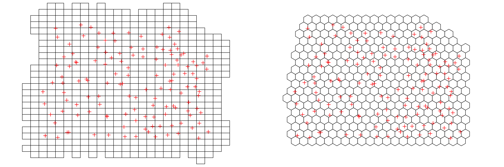
Next, we construct the basis functions \(\{\phi_i(\mathbf{s};t) : i = 1,\dots,n_\alpha\}\). In FRK, these are constructed by taking the tensor product of spatial basis functions with temporal basis functions. Specifically, consider a set of \(r_s\) spatial basis functions \(\{\phi_{p}(\mathbf{s}): p = 1,\dots,r_s\}\), and a set of \(r_t\) temporal basis functions \(\{\psi_{q}(t): q = 1,\dots,r_t\}\). Then we construct the set of spatio-temporal basis functions as \(\{\phi_{st,u}(s,t) : u = 1,\dots,r_sr_t\} = \{\phi_{p}(\mathbf{s})\psi_{q}(t) : p = 1,\dots,r_s;\ q = 1,\dots,r_t\}\).
The generic basis function that FRK uses by default is the bisquare function (see Figure 4.7) given by
\[ b(\mathbf{s},\mathbf{v}) \equiv \left\{\begin{array}{ll} \{1 - (\|\mathbf{v}- \mathbf{s}\|/r)^2\}^2, &\| \mathbf{v}-\mathbf{s}\| \le r, \\ 0, & \textrm{otherwise}, \end{array} \right. \]
where \(r\) is the aperture parameter. Basis functions can be either regularly placed or irregularly placed, and they are often multiresolutional. We choose two resolutions below, yielding \(r_s = 94\) spatial basis functions in total, and place them irregularly in the domain. (Note that \(r_s\) and the bisquare apertures are determined automatically by auto_basis.)
G_spatial <- auto_basis(manifold = plane(), # fns on plane
data = as(STObj5, "Spatial"), # project
nres = 2, # 2 res.
type = "bisquare", # bisquare.
regular = 0) # irregularTemporal basis functions also need to be defined. We use the function local_basis below to construct a regular sequence of \(r_t = 20\) bisquare basis functions between day 1 and day 31 of the month. Each of these bisquare basis functions is assigned an aperture of 2 days; that is, the support of each bisquare function is 4 days. The temporal grid is defined through
t_grid <- matrix(seq(1, 31, length = 20))The basis functions are constructed using the following commands.
G_temporal <- local_basis(manifold = real_line(), # fns on R1
type = "bisquare", # bisquare
loc = t_grid, # centroids
scale = rep(2, 20)) # aperture par.Finally, we construct the \(r_sr_t = 1880\) spatio-temporal basis functions by taking the tensor product of the spatial and the temporal ones, using the function TensorP.
G <- TensorP(G_spatial, G_temporal) # take the tensor productThe basis functions G_spatial and G_temporal can be visualized using the plotting function show_basis; see Figure 4.10. While the basis functions are of tensor-product form, the resulting S-T covariance function obtained from the spatio-temporal random effects model is not separable in space and time.

In FRK, the fine-scale variation term at the BAU level, Equation 4.28, is assumed to be Gaussian with covariance matrix proportional to \(\textrm{diag}(\{\sigma^2_{\nu,i}\})\), where \(\{\sigma^2_{\nu,i}: i = 1,\dots,n_y\}\) are pre-specified at the BAU level (the constant of proportionality is then estimated by FRK). Typically, these are related to some geographically related quantity such as surface roughness. In our case, we simply set \(\sigma^2_{\nu,i} = 1\) for all \(i\).
BAUs$fs = 1The fine-scale variance at the BAU level is confounded with the measurement-error variance. In some cases, the measurement-error variance is known; when it is not (as in this case), one can carry out a simple analysis to estimate the value of the semivariogram at the origin. In this case, we simply assume that the nugget effect estimated when fitting the separable covariance function in Lab 4.1 is the measurement-error variance – any residual nugget component is then assumed to be the fine-scale variance introduced as a consequence of the low-rank approximation to the process. The measurement-error variance is specified in the std field in the data ST object.
STObj5$std <- sqrt(0.049)The response variable and covariates are identified through a standard R formula. In this case, we use latitude as a covariate and set
f <- z ~ lat + 1We are now ready to call the main function FRK, which estimates all the unknown parameters in the models, including the covariance matrix of the basis-function coefficients and the fine-scale variance. We need to supply the formula, the data, the basis functions, the BAUs, and any other parameters configuring the expectation-maximization (EM) algorithm used for finding the maximum likelihood estimates. To reduce processing time, we have set the number of EM-algorithm steps to 3. Convergence of the EM algorithm can be assessed visually by setting print_lik = TRUE below.
S <- FRK(f = f, # formula
data = list(STObj5), # (list of) data
basis = G, # basis functions
BAUs = BAUs, # BAUs
n_EM = 3, # max. no. of EM iterations
tol = 0.01) # tol. on change in log-likelihoodOnce the model is fitted, prediction proceeds via the function predict. If the argument newdata is not specified, then prediction is done at all the BAUs.
grid_BAUs <- predict(S)The resulting object, grid_BAUs, is also of class STFDF, and plotting proceeds as per Lab 4.1 using the stplot function. The resulting predictions and prediction standard errors are illustrated in Figure 4.6.
Lab 4.3: Temporal Basis Functions with SpatioTemporal
In this Lab we model the maximum temperature in the NOAA data set (Tmax) using temporal basis functions and spatial random fields. Specifically, we use the model
\[ Y(\mathbf{s};t) = \mathbf{x}(\mathbf{s};t)' \boldsymbol{\beta}+ \sum_{i=1}^{n_\alpha} \phi_{i}(t) \alpha_i(\mathbf{s}) + \nu(\mathbf{s};t), \tag{4.39}\]
where \(\mathbf{x}(\mathbf{s};t)\) are the covariates; \(\boldsymbol{\beta}\) are the regression coefficients; \(\{\phi_i(t)\}\) are the temporal basis functions; \(\{\alpha_i(\mathbf{s})\}\) are coefficients of the temporal basis functions, modeled as multivariate (spatial) random fields; and \(\nu(\mathbf{s};t)\) is a spatially correlated, but temporally independent, random process.
Spatio-temporal modeling using temporal basis functions can be carried out using the package SpatioTemporal. For this Lab we require the following packages.
library("dplyr")
library("ggplot2")
library("gstat")
library("RColorBrewer")
library("sp")
library("spacetime")
library("SpatioTemporal")
library("STRbook")
library("tidyr")The space-time object used by SpatioTemporal is of class STdata and is created using the function createSTdata. This function takes the data either as a space-wide matrix with the row names containing the date and the column names the station ID, or as a data frame in long form. Here we use the latter. This data frame needs to have the station ID as characters in the field ID, the data in the field obs, and the date in the field date. A new data frame of this form can be easily created using the function transmute from the package dplyr.
data("NOAA_df_1990", package = "STRbook") # load NOAA data
NOAA_sub <- filter(NOAA_df_1990, # filter data to only
year == 1993 & # contain July 1993
month == 7 &
proc == "Tmax") # and just max. temp.
NOAA_sub_for_STdata <- NOAA_sub %>%
transmute(ID = as.character(id),
obs = z,
date = date)The covariates that will be used to model the spatially varying effects also need to be supplied as a data frame. In our case we only consider the station coordinates as covariates. The station coordinates are extracted from the maximum temperature data as follows.
covars <- dplyr::select(NOAA_sub, id, lat, lon) %>%
unique() %>%
dplyr::rename(ID = id) # createSTdata expects "ID"Now we can construct the STdata object by calling the function createSTdata.
STdata <- createSTdata(NOAA_sub_for_STdata, covars = covars)The model used in SpatioTemporal assumes that \(\nu(\mathbf{s};t)\) is temporally uncorrelated. Consequently, all temporal variability needs to be captured through the covariates or the basis functions. To check whether the data exhibit temporal autocorrelation (before adding any temporal basis functions), one can use the plot function. For example, we plot the estimated autocorrelation function for station 3812 in the left panel of Figure 4.11 (after the mean is removed from the data). The plot suggests that the data are correlated (the estimated lag-1 autocorrelation coefficient is larger than would be expected by chance at the 5% level of significance).
plot(STdata, "acf", ID = "3812")The role of the temporal basis functions is to adequately capture temporal modes of variation. When modeling data over a time interval that spans years, one of these is typically a seasonal component. As another example, when modeling trace-gas emissions, one basis function to use would be one that captures weekday/weekend cycles typically found in gaseous pollutants (e.g., due to vehicular traffic). The package SpatioTemporal allows for user-defined basis functions (see the example at the end of this Lab) or data-driven basis functions (which we consider now). In both cases, the first temporal basis function, \(\phi_1(t)\), is a constant; that is, \(\phi_1(t) = 1\).
The basis functions extracted from the data are smoothed, left singular vectors (i.e., smoothed temporal EOFs) of the matrix \(\widetilde{\mathbf{Z}}\), described in Note 2.2. These make up the remaining \(n_\alpha - 1\) basis functions, upon which smoothing is carried out using splines. In SpatioTemporal, these basis functions are found (or set) using the function updateTrend.
STdata <- updateTrend(STdata, n.basis = 2)We can see that the lag-1 autocorrelation coefficient is no longer significant (at the 5% level) after adding in these basis functions; see the right panel of Figure 4.11. In practice, one should add basis functions until temporal autocorrelation in the data (at most stations) is considerably reduced. In this case study, it can be shown that 69% of stations record maximum temperature data that have lag-1 autocorrelation coefficients that are significant at the 5% level. On the other hand, with n.basis = 2 (i.e., with two temporal basis functions for capturing temporal variation), the proportion of stations with residuals exhibiting a significant lag-1 autocorrelation coefficient is 26%.
plot(STdata, "acf", ID = "3812")
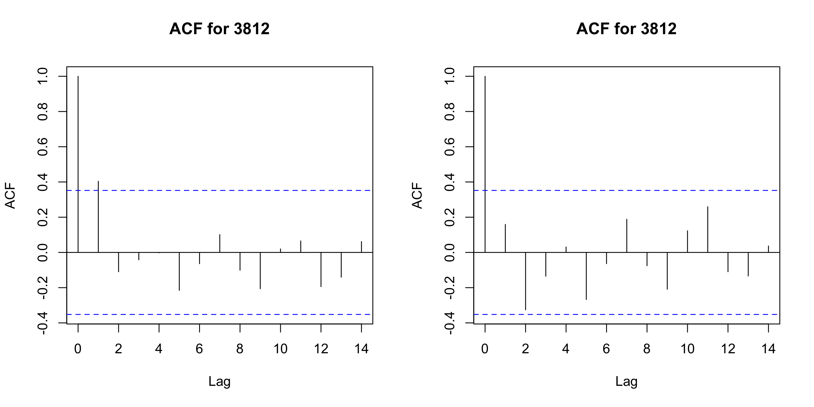
Tmax at Station 3812. Right: Same as left panel, but with the data first detrended using an intercept and the two temporal basis functions shown in the top panel of Figure 4.8.
The basis functions, available in STdata$trend, are shown in the top panel of Figure 4.8.
In SpatioTemporal, the spatial quantities \(\{\alpha_i(\mathbf{s})\}\) are themselves modeled as spatial fields. Once the \(\{\phi_i(t)\}\) are declared, empirical estimates of \(\{\alpha_i(\mathbf{s})\}\) can be found using the function estimateBetaFields. Note that we use the Greek letter “alpha” to denote these fields, which differs from the name “Beta” inside the command. The following and all subsequent references to “Beta” and “beta” should be interpreted as representing spatial fields \(\{\alpha_i(\mathbf{s})\}\).
beta.lm <- estimateBetaFields(STdata)The resulting object, beta.lm, contains two fields; beta (estimated coefficients) and beta.sd (standard error of the estimates) with row names equal to the station ID, and three columns corresponding to estimates of \(\alpha_1(\mathbf{s})\), \(\alpha_2(\mathbf{s})\), and \(\alpha_3(\mathbf{s})\), respectively. We are interested in seeing whether the empirical estimates are correlated with our covariate, latitude. To this end, the authors of SpatioTemporal suggest using the package plotrix, and the function plotCI, to plot the estimates and covariance intervals against a covariate of choice. When plotting using plotCI, care should be taken that the ordering of the stations in beta and beta.sd is the same as that if the covariate data frame. For example, consider
head(row.names(beta.lm$beta))[1] "13865" "13866" "13871" "13873" "13874" "13876"head(covars$ID)[1] 3804 3810 3811 3812 3813 3816This illustrates a discrepancy, since the ordering of strings is not necessarily that of the ordered integers. For this reason, we recommend employing best practice and always merging (e.g., using left_join) on a column variable; in this case, we choose the integer version of the field ID. In the following commands, we first convert the beta and beta.sd objects into data frames, add the column ID, join into a data frame BETA, and then combine with covars containing the latitude data.
beta.lm$beta <- data.frame(beta.lm$beta)
beta.lm$beta.sd <- data.frame(beta.lm$beta.sd)
beta.lm$beta$ID <- as.integer(row.names(beta.lm$beta))
BETA <- cbind(beta.lm$beta, beta.lm$beta.sd)
colnames(BETA) <- c("alpha1", "alpha2", "alpha3", "ID",
"alpha1_CI", "alpha2_CI", "alpha3_CI")
BETA <- left_join(BETA, covars, by = "ID")Once BETA is constructed, the empirical estimates can be plotted using ggplot, with geom_errorbar to also plot error bars, as follows.
ggplot(BETA) + geom_point(aes(x = lat, y = alpha1)) +
geom_errorbar(aes(x = lat,
ymin = alpha1 - 1.96*alpha1_CI,
ymax = alpha1 + 1.96*alpha1_CI)) +
ylab(expression(alpha[1](s))) +
xlab("lat (deg)") + theme_bw()The three empirical estimates, plotted as a function of latitude, are shown in Figure 4.12. The function \(\alpha_1(\mathbf{s})\) exhibits a strong latitudinal trend, as expected; \(\alpha_2(\mathbf{s})\) shows a weak latitudinal trend; and \(\alpha_3(\mathbf{s})\) exhibits no trend. For this reason, we model the expectations of these fields as Equation 4.32–Equation 4.34, where \(s_2\) denotes the latitude coordinate at \(\mathbf{s}= (s_1, s_2)'\). Note that in this model we do not consider any spatio-temporal covariates, and hence the term \(\mathbf{x}(\mathbf{s};t)'\boldsymbol{\beta}= 0\) in Equation 4.39. This does not mean that we do not have an intercept in our model: although it is random, the spatial field \(\alpha_1(\mathbf{s})\) acts as a temporally invariant spatial covariate and includes a global space-time mean (\(\alpha_{11}\) in Equation 4.32), which is estimated.

We let the covariance functions \(\textrm{cov}(\alpha_i(\mathbf{s}),\alpha_i(\mathbf{s}+ \mathbf{h}))\), \(i = 1,2,3\), be exponential covariance functions without a nugget-effect term. In SpatioTemporal these are declared as follows.
cov.beta <- list(covf = "exp", nugget = FALSE)All that remains for constructing the spatio-temporal model is to define the spatial covariance function of the zero-mean, temporally independent, residual process \(\nu(\mathbf{s};t)\); see Equation 4.39. We choose this to be an exponential covariance function with a nugget effect to account for measurement error. The argument random.effect = FALSE is used to indicate that there is no random mean offset for the field at each time point.
cov.nu <- list(covf = "exp",
nugget = ~1,
random.effect = FALSE) # No random mean
# for each nuThe function to create the spatio-temporal model is createSTmodel. This takes as data the object STdata, the covariates for the \(\alpha\)-fields (an intercept and latitude for \(\alpha_1(\mathbf{s})\) and \(\alpha_2(\mathbf{s})\), and just an intercept for \(\alpha_3(\mathbf{s})\); see Equation 4.32–Equation 4.34), the covariance functions of the \(\alpha\)-fields and the \(\nu\)-field, and a list containing the names of station coordinate fields (lon and lat).
locations <- list(coords = c("lon", "lat"))
LUR <- list(~lat, ~lat, ~1) # lat trend for phi1 and phi2 only
STmodel <- createSTmodel(STdata, # data
LUR = LUR, # spatial covariates
cov.beta = cov.beta, # cov. of alphas
cov.nu = cov.nu, # cov. of nu
locations = locations) # coord. namesIn order to fit the spatio-temporal model to the data, we need to provide initial values of the parameter estimates. The required parameter names can be extracted using the function loglikeSTnames and, for our model, are as follows.
parnames <- loglikeSTnames(STmodel, all = FALSE)
print(parnames)[1] "log.range.const.exp" "log.sill.const.exp"
[3] "log.range.V1.exp" "log.sill.V1.exp"
[5] "log.range.V2.exp" "log.sill.V2.exp"
[7] "nu.log.range.exp" "nu.log.sill.exp"
[9] "nu.log.nugget.(Intercept).exp"Noting that all parameters are log-transforms of the quantities of interest, we let all of the initial values be equal to 3 (so that all initial ranges and sills are \(e^3 \approx 20\)). This seems reasonable when the temperature is varying on the order of several degrees Fahrenheit, and where the domain also spans several degrees (in latitude and longitude).
We use the function estimate below to fit the spatio-temporal model to the data. This may take several minutes on a standard desktop computer. In this instance, the resulting object SpatioTemporalfit1 has been pre-computed and can be loaded directly from STRbook by typing data("SpatioTemporalfit1", package = "STRbook").
x.init <- matrix(3, 9, 1)
rownames(x.init) <- loglikeSTnames(STmodel, all = FALSE)
SpatioTemporalfit1 <- estimate(STmodel, x.init)The fitted coefficients for the parameters described by parnames above can be extracted from the fitted object using the function coef.
x.final <- coef(SpatioTemporalfit1, pars = "cov")$parHaving fitted the model, we now predict at unobserved locations. First, we establish the spatial and temporal grid upon which to predict; this proceeds by first initializing an STdata object on a grid. We construct the grid following a very similar approach to what was done in Lab 4.1.
## Define space-time grid
spat_pred_grid <- expand.grid(lon = seq(-100, -80, length = 20),
lat = seq(32, 46, length = 20))
spat_pred_grid$id <- 1:nrow(spat_pred_grid)
temp_pred_grid <- as.Date("1993-07-01") + seq(3, 28, length = 6)
## Initialize data matrix
obs_pred_wide <- matrix(0, nrow = 6, ncol = 400)
## Set row names and column names
rownames(obs_pred_wide) <- as.character(temp_pred_grid)
colnames(obs_pred_wide) <- spat_pred_grid$id
covars_pred <- spat_pred_grid # covariates
STdata_pred <- createSTdata(obs = obs_pred_wide, # ST object
covars = covars_pred)Now prediction proceeds using the function predict, which requires as arguments the model, the fitted model parameters, and the data matrix STdata_pred.
E <- predict(STmodel, x.final, STdata = STdata_pred)The returned object E contains both the \(\alpha\)-fields predictions as well as the \(Y\)-field prediction at the unobserved locations. For example, E$beta$EX contains the conditional expectations of \(\alpha_1(\mathbf{s}),\alpha_2(\mathbf{s})\), and \(\alpha_3(\mathbf{s})\) given the data. For conciseness, we do not illustrate the plotting commands here. In the bottom panels of Figure 4.8, we show the conditional expectations, while in Figure 4.13 and Figure 4.14 we show the predictions and prediction standard errors of maximum temperature over six days of interest in July 1993.

Tmax in degrees Fahrenheit within a square lat-lon box defining the spatial domain of interest, for six days in July 1993, using temporal basis functions. Data for 14 July 1993 were deliberately omitted from the original data set.
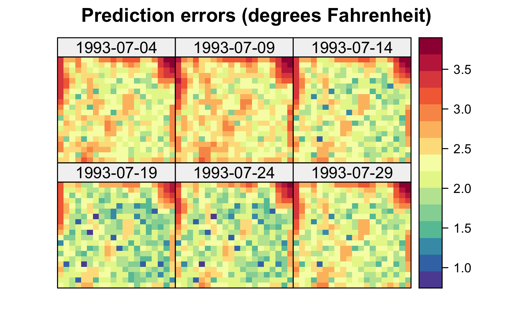
Tmax in degrees Fahrenheit within a square lat-lon box enclosing the spatial domain of interest, for six days in July 1993, using temporal basis functions. Data for 14 July 1993 were deliberately omitted from the original data set.
Using SpatioTemporal for Modeling Spatial Effects of Temporal Covariates
In the first part of this Lab, we extracted the temporal basis functions from the data. However, SpatioTemporal can also be used to model the spatially varying effect of exogenous temporal covariates. This can be done by manually setting the STdata$trend data frame. When modeling temperature, interesting covariates may include a periodic signal with period equal to one year, or an index such as the El Niño Southern Oscillation (ENSO) Index.
To use a pre-existing covariate, we need to use the fnc argument in updateTrend to define a function that takes a Date object as an input and returns the covariate at these dates. The easiest way to do this in this example is to specify a look-up table in the function containing the covariate for each date, but an interpolant can also be used when the covariate has missing information for one or more dates.
As an exercise, repeat the Lab above, but this time use a single linear temporal trend as a temporal covariate. The look-up table we need is just a two-column data frame containing the date in the first column, and V1 (first covariate) in the second column. This can be set up as follows.
all_dates <- NOAA_sub$date %>% unique() # dates
lookup <- data.frame(date = all_dates, # covariate (linear)
V1 = scale(as.numeric(all_dates)))Type plot(lookup) to see the temporal covariate that we have just created. Now we need to create the function that takes a Date object as input and returns the required covariate values. This can be done using left_join.
## Function that returns the covariates in a data frame
## at the required dates
fnc <- function(dates) {
left_join(data.frame(date = dates),
lookup, by = "date") %>%
select(-date)
}Now we can call updateTrend with our covariate function as argument.
STdata <- updateTrend(STdata, fnc = fnc)The rest of the code remains largely similar, except that now we are considering only two temporal basis functions and not three (the first basis function is constant in time, and the second one is linear in time). Changing the required parts of the code is left as an exercise.
Lab 4.4: Non-Gaussian Spatio-Temporal GAMs with mgcv
Generalized additive models (GAMs) and generalized additive mixed models (GAMMs) can be implemented quickly and efficiently with the package mgcv and the functions gam and gamm, respectively. For a comprehensive treatment of GAMs and GAMMs and their implementation through mgcv, see Wood (2017).
In this Lab, we aim to predict the expected counts at arbitrary spatio-temporal locations from the vector of observed counts \(\mathbf{Z}\). The data we use are the Carolina wren counts in the BBS data set described in Section 2.1. We require the package mgcv as well as dplyr, tidyr, ggplot2, and STRbook.
library("dplyr")
library("ggplot2")
library("mgcv")
library("STRbook")
library("tidyr")
data("MOcarolinawren_long", package = "STRbook")GAMs and GAMMs rely on constructing smooth functions of the covariates, and in a spatio-temporal context, these will inevitably include space and time. In this Lab, we consider the following simple GAM (see Equation 4.36):
\[ g(Y(\mathbf{s};t)) = \beta + f(\mathbf{s};t) + \nu(\mathbf{s};t), \tag{4.40}\]
where \(g(\cdot)\) is a link function, \(\beta\) is an intercept, the function \(f(\mathbf{s};t)\) is a random smooth function of space and time, and \(\nu(\mathbf{s};t)\) is a spatio-temporal white-noise error process.
In mgcv, the random function \(f(\mathbf{s};t)\) is generally decomposed using a separable spline basis. Now, there are several basis functions that can be used to reconstruct \(f(\mathbf{s};t)\), some of which are knot-based (e.g., B-splines). For the purpose of this Lab, it is sufficient to know that splines, of whatever order, are decomposed into a set of basis functions. Thus, \(f(\mathbf{s};t)\) is decomposed as \(\sum_{i=1}^{r_1}\phi_{1i}(\mathbf{s};t)\alpha_{1i}\), where the \(\{\alpha_{1i}\}\) are unknown random effects that need to be predicted, and the \(\{\phi_{1i}\}\) are given below.
There are a number of basis functions that can be chosen. Those derived from thin-plate regression splines are convenient, as they are easily amenable to multiple covariates (e.g., functions of \((\mathbf{s};t) \equiv (s_1,s_2; t)\)). Thin-plate splines are isotropic and invariant to rotation but not invariant to covariate scaling. Hence, the use of thin-plate splines for fitting a curve over space and time is not recommended, since units in time are different from those in space.
To combine interacting covariates with different units, such as space and time, mgcv implements a tensor-product structure, whereby the basis functions smoothing the individual covariates are combined productwise. That is,
\[ f(\mathbf{s};t) = \sum_{i=1}^{r_1}\sum_{j=1}^{r_2}\phi_{1i}(\mathbf{s})\phi_{2j}(t)\alpha_{ij} \equiv \boldsymbol{\phi}(\mathbf{s};t)' \boldsymbol{\alpha}. \]
The function te forms the product from the marginals; for example, in our case this can be achieved by using te(lon,lat,t). Other arguments can be passed to te for added functionality; for example, the basis-function class is specified through bs, the number of basis functions through k, and the dimension of each spline through d. In this case, we employ a thin-plate spline basis over longitude and latitude ("tp") and a cubic regression spline over time ("cr"). A GAM formula for Equation 4.40 is implemented as follows:
f <- cnt ~ te(lon, lat, t, # inputs over which to smooth
bs = c("tp", "cr"), # types of bases
k = c(50, 10), # knot count in each dimension
d = c(2, 1)) # (s,t) basis dimensionWe chose \(r_1 = 50\) basis functions for the spatial component and \(r_2 = 10\) for the temporal component. These values were chosen after some trial and error. The number of knots could have been set using cross-validation; see Chapter 3. In general, the estimated degrees of freedom should be considerably lower than the total number of knots; if this is not the case, probably the number of knots should be increased.
In Lab 3.4 we saw that the Carolina wren counts are over-dispersed. To account for this, we use the negative-binomial distribution to model the response in Equation 4.35 (a quasi-Poisson model would also be suitable). The gam function is called in the code below, where we specify the negative-binomial family and a log link (the function \(g(\cdot)\) in Equation 4.40):
cnts <- gam(f, family = nb(link = "log"),
data = MOcarolinawren_long)The returned object is a gam object, which extends glm and lm objects (i.e., functions that can be applied to glm and lm objects, such as residuals, can also be applied to gam objects). The negative-binomial distribution handles over-dispersion in the data through a size parameter \(r\), such that, for a fixed mean, the negative-binomial distribution approaches the Poisson distribution as \(r \rightarrow \infty\). In this case, the estimated value for \(r\) (named Theta in mgcv) is
cnts$family$getTheta(trans = 1)[1] 5.178305which is not large and suggestive of over-dispersion. Several graphical diagnostics relating to the fit can be explored using the gam.check function.
To predict the field at unobserved locations using the hierarchical model, we first construct a space-time grid upon which to predict.
MOlon <- MOcarolinawren_long$lon
MOlat <- MOcarolinawren_long$lat
## Construct space-time grid {.unnumbered}
grid_locs <- expand.grid(lon = seq(min(MOlon) - 0.2,
max(MOlon) + 0.2,
length.out = 80),
lat = seq(min(MOlat) - 0.2,
max(MOlat) + 0.2,
length.out = 80),
t = 1:max(MOcarolinawren_long$t))Then we call the function predict which, when se.fit = TRUE, returns a list containing the predictions and their associated prediction standard errors.
X <- predict(cnts, grid_locs, se.fit = TRUE)Specifically, the predictions and prediction standard errors are available in X$fit and X$se.fit, respectively. These can be plotted using ggplot2 as follows.
## Put data to plot into data frame
grid_locs$pred <- X$fit
grid_locs$se <- X$se.fit
## Plot predictions and overlay observations
g1 <- ggplot() +
geom_raster(data = grid_locs,
aes(lon, lat, fill = pmin(pmax(pred, -1), 5))) +
facet_wrap(~t, nrow = 3, ncol = 7) +
geom_point(data = filter(MOcarolinawren_long, !is.na(cnt)),
aes(lon, lat),
colour = "black", size = 3) +
geom_point(data=filter(MOcarolinawren_long, !is.na(cnt)),
aes(lon, lat, colour = log(cnt)),
size = 2) +
fill_scale(limits = c(-1, 5),
name = expression(log(Y[t]))) +
col_scale(name = "log(cnt)", limits=c(-1, 5)) +
theme_bw()
## Plot prediction standard errors
g2 <- ggplot() +
geom_raster(data = grid_locs,
aes(lon, lat, fill = pmin(se, 2.5))) +
facet_wrap(~t, nrow = 3, ncol = 7) +
fill_scale(palette = "BrBG",
limits = c(0, 2.5),
name = expression(s.e.)) +
theme_bw()The plots are shown in Figure 4.15 and Figure 4.16, respectively. One may also use the plot.gam function on cnts to quickly generate plots of the tensor products.

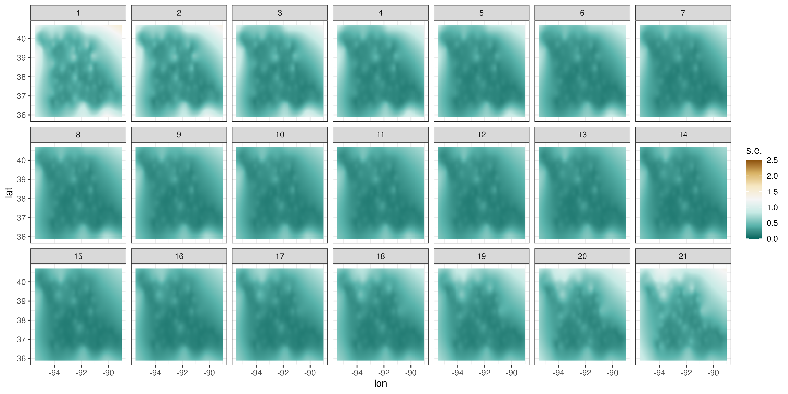
Lab 4.5: Non-Gaussian Spatio-Temporal Models with INLA
Integrated Nested Laplace Approximation (INLA) is a Bayesian method that provides approximate marginal (posterior) distributions over all states and parameters. The package INLA allows for a variety of modeling approaches, and the reader is referred to the book by Blangiardo and Cameletti (2015) for an extensive treatment. Other useful resources are Lindgren and Rue (2015) and Krainski et al. (2019).
In this Lab we shall predict expected counts at arbitrary space-time locations from the vector of observed counts \(\mathbf{Z}\). The data we use are the Carolina wren counts in the BBS data set described in Section 2.1. For this Lab, we require the package INLA as well as dplyr, tidyr, ggplot2, and STRbook.
library("INLA")
library("dplyr")
library("tidyr")
library("ggplot2")
library("STRbook")
data("MOcarolinawren_long", package = "STRbook")Consider the data model,
\[ \mathbf{Z}_t | \mathbf{Y}_t \; \sim \; ind.~NB(\mathbf{Y}_t, r), \tag{4.41}\]
and the process model,
\[ \log(\mathbf{Y}_t) = \mathbf{X}_t \boldsymbol{\beta}+ \boldsymbol{\Phi}_t \boldsymbol{\alpha}_t. \tag{4.42}\]
In Equation 4.41 and Equation 4.42, \(\mathbf{Z}_t\) is an \(m_t\)-dimensional data vector of counts at \(m_t\) spatial locations, \(E(\mathbf{Z}_t | \mathbf{Y}_t) = \mathbf{Y}_t\), \(\mathbf{Y}_t\) represents the latent spatio-temporal mean process at \(m_t\) locations, \(\boldsymbol{\Phi}_t\) is an \(m_t \times n_\alpha\) matrix of spatial basis functions, \(r\) is the size parameter, and the associated random coefficients are modeled as \(\boldsymbol{\alpha}_t \; \sim \; \text{Gau}({\mathbf{0}},\mathbf{C}_\alpha)\).
In order to fit this hierarchical model, we need to generate the basis functions with which to construct the matrices \(\{\boldsymbol{\Phi}_t: t = 1,\dots,T\}\). In INLA, the basis functions used are typically “tent” (finite element) functions constructed over a triangulation of the domain. To establish a “boundary” for the domain, we can use the function inla.nonconvex.hull, as follows.
coords <- unique(MOcarolinawren_long[c("loc.ID", "lon", "lat")])
boundary <- inla.nonconvex.hull(as.matrix(coords[, 2:3]))The triangulation of the domain is then carried out using the function inla.mesh.2d. This function takes several arguments (see its help file for details). Two of the most important arguments are max.edge and cutoff. When the former is supplied with a vector of length \(2\), the first element is the maximum edge length in the interior of the domain, and the second element is the maximum edge length in the exterior of the domain (obtained from a small buffer that is automatically created to reduce boundary effects). The second argument, cutoff, establishes the minimum edge length. Below we choose a maximum edge length of 0.8 in the domain interior. This is probably too large for the problem at hand, but reducing this considerably increases the computational burden when fitting the model.
MOmesh <- inla.mesh.2d(boundary = boundary,
max.edge = c(0.8, 1.2), # max. edge length
cutoff = 0.1) # min. edge lengthThe mesh and the data locations are plotted using the following commands.
plot(MOmesh, asp = 1, main = "")
lines(coords[c("lon", "lat")], col = "red", type = "p")These are shown in Figure 4.17. Note that the triangulation is irregular and contains an extension with triangles that are larger than those in the interior of the domain.

As in the standard Gaussian case, the modeling effort lies in establishing the covariance matrix of \(\boldsymbol{\alpha}\equiv (\boldsymbol{\alpha}_1',\dots,\boldsymbol{\alpha}_T')'\). When using INLA, typically the covariance matrix of \(\boldsymbol{\alpha}\) is chosen to be separable and of the form \(\boldsymbol{\Sigma}_t(\rho) \otimes \boldsymbol{\Sigma}_s(\tau,\kappa,\nu)\) in such a way that its inverse (i.e., the precision matrix) is sparse. The matrix \(\boldsymbol{\Sigma}_t\) is constructed assuming an AR(1) process, and thus it is parameterized using a single AR parameter, \(\rho\). This parameter dictates the correlation of \(\boldsymbol{\alpha}\) across time; the closer \(\rho\) is to 1, the higher the temporal correlation. The matrix \(\boldsymbol{\Sigma}_s\) is parameterized using three parameters, and it reflects the spatial covariance required such that the reconstructed field is, approximately, a solution to the stochastic partial differential equation (SPDE)
\[ (\kappa^2 - \Delta)^{\alpha/2}(\tau Y(\cdot)) = \epsilon(\cdot), \]
where \(\Delta\) is the Laplacian, \(\epsilon(\cdot)\) is a white-noise process, and \(\tau\) controls the variance. The resulting field has a Matérn covariance function. The parameter \(\kappa\) is a scaling parameter that translates to a “practical” spatial correlation length (i.e., the spatial separation at which the correlation is 0.1) \(l = (\sqrt{8\nu})/\kappa\), while \(\alpha = \nu + d/2\) is a smoothness parameter and \(d\) is the spatial dimension. Here we fix \(\nu = 1\) (\(\alpha = 2\)); this parameter is notoriously difficult to estimate and frequently set using cross-validation. Note that there are other “practical” length scales used to characterize the range of a correlation function (e.g., “effective range” when the correlation is 0.05); our choice here is motivated by the INLA package that readily provides a marginal distribution over the parameter \(l\) as defined here.
The SPDE can be constructed on the mesh using the function inla.spde2.pcmatern. The pc in pcmatern is short for “penalized complexity,” and it is used to refer to prior distributions over the hyperparameters that are both interpretable and that have interesting theoretical properties Simpson et al. (2017). We define prior distributions below over the range parameter \(l\) such that \(P(l < 1) = 0.01\), and over the marginal standard deviation such that \(P(\sigma > 4) = 0.01\). We elicited these distributions by looking at the count data – it is highly unlikely that the spatial correlation length is less than 1 degree and that the expected counts are of the order of 50 or more (we will use a log link, and \(e^4 \approx 55\)).
spde <- inla.spde2.pcmatern(mesh = MOmesh,
alpha = 2,
prior.range = c(1, 0.01),
prior.sigma = c(4, 0.01))With the discretization shown in Figure 4.17, \(\alpha_{t,i}\) can be viewed as the weight of the \(i\)th basis function at time \(t\). The observation matrix \(\boldsymbol{\Phi}_t\) then maps the observations to the finite-element space at time \(t\); if the observation lies exactly on a vertex, then the associated row in \(\boldsymbol{\Phi}_t\) will be 0 everywhere except for a 1 in the column corresponding to the vertex. Otherwise, the row has three non-zero elements, with each representing the proportion being assigned to each vertex. For point predictions or areal averages, all rows in \(\boldsymbol{\Phi}_t\) sum to 1. Finally, for this example, we choose each element in \(\mathbf{X}_t\) to be equal to 1. The coefficient \(\beta_0\) is then the intercept.
The package INLA requires space and time to be “blocked up” with an ordering of the variables in which space runs faster than time (i.e., the first few variables are spatial nodes at the first time point, the next few are at the second time point, and so on). Hence we have the block-matrix structure
\[ \log\left(\begin{bmatrix} \mathbf{Y}_1 \\ \vdots \\ \mathbf{Y}_T \end{bmatrix}\right) = \begin{bmatrix} \mathbf{X}_1 \\ \vdots \\ \mathbf{X}_T \end{bmatrix}\boldsymbol{\beta}+ \begin{bmatrix} \boldsymbol{\Phi}_1 & \mathbf{0}& \dots \\ \vdots & \ddots & \vdots \\ \mathbf{0}& \dots & \boldsymbol{\Phi}_T \end{bmatrix} \begin{bmatrix} \boldsymbol{\alpha}_1 \\ \vdots \\ \boldsymbol{\alpha}_T \end{bmatrix}, \tag{4.43}\]
where \(\log(\cdot)\) corresponds to a vector of elementwise logarithms. This can be further simplified to
\[ \log(\mathbf{Y}) = \mathbf{X}\boldsymbol{\beta}+ \boldsymbol{\Phi}\boldsymbol{\alpha}, \tag{4.44}\]
where \(\mathbf{Y}= (\mathbf{Y}_1',\dots,\mathbf{Y}_T')'\), \(\mathbf{X}= (\mathbf{X}_1',\dots,\mathbf{X}_T')'\), \(\boldsymbol{\Phi}\equiv \textrm{bdiag}(\{\boldsymbol{\Phi}_t : t = 1,\dots,T\})\), \(\textrm{bdiag}(\cdot)\) constructs a block-diagonal matrix from its arguments, and \(\boldsymbol{\alpha}\equiv (\boldsymbol{\alpha}_1',\dots,\boldsymbol{\alpha}_T')'\).
A space-time index needs to be constructed for this representation. This index is a double index that identifies both the spatial location and the associated time point. In Lab 2.2 we saw how the function expand.grid can be used to generate such indices from a set of spatial locations and time points. In INLA, we instead use the function inla.spde.make.index. It takes as arguments the index name, the number of spatial points in the mesh, and the number of time points.
n_years <- length(unique(MOcarolinawren_long$t))
n_spatial <- MOmesh$n
s_index <- inla.spde.make.index(name = "spatial.field",
n.spde = n_spatial,
n.group = n_years)The list s_index contains two important items, the spatial.field index, which runs from 1 to n_spatial for n_years times, and spatial.field.group, which runs from 1 to n_years, with each element replicated n_spatial times. Note how this is similar to what one would obtain from expand.grid.
The matrix \(\boldsymbol{\Phi}\) in Equation 4.44 is found using the inla.spde.make.A function. This function takes as arguments the mesh, the measurement locations loc, the measurement group (in our case the year of observation) and the number of groups.
coords.allyear <- MOcarolinawren_long[c("lon", "lat")] %>%
as.matrix()
PHI <- inla.spde.make.A(mesh = MOmesh,
loc = coords.allyear,
group = MOcarolinawren_long$t,
n.group = n_years)Note that
dim(PHI)[1] 1575 5439This is a matrix equal in dimension to (number of observations) \(\times\) (number of indices) of our basis functions in space and time.
nrow(MOcarolinawren_long)[1] 1575length(s_index$spatial.field)[1] 5439The latent Gaussian model is constructed in INLA through a stack. Stacks are handy as they allow one to define data, effects, and observation matrices in groups (e.g., one accounting for the measurement locations and another accounting for the prediction locations), which can then be stacked together into one bigger stack. In order to build a stack we need to further block up Equation 4.43 into a representation amenable to the inla function (called later on) as follows:
\[ \log(\mathbf{Y}) = \boldsymbol{\Pi}\boldsymbol{\gamma}, \]
where \(\boldsymbol{\Pi}= (\boldsymbol{\Phi}, \mathbf{1})\) and \(\boldsymbol{\gamma}= (\boldsymbol{\alpha}',\beta_0)'\).
A stack containing the data and covariates at the measurement locations is constructed by supplying the data (argument data), the matrix \(\boldsymbol{\Pi}\) (argument A), and information on the vector \(\boldsymbol{\gamma}\). The stack is then tagged with the label "est".
## First stack: Estimation
n_data <- nrow(MOcarolinawren_long)
stack_est <- inla.stack(
data = list(cnt = MOcarolinawren_long$cnt),
A = list(PHI, 1),
effects = list(s_index,
list(Intercept = rep(1, n_data))),
tag = "est")We next construct a stack containing the matrices and vectors defining the model at the prediction locations. In this case, we choose the triangulation vertices as the prediction locations; then \(\boldsymbol{\Phi}\) is simply the identity matrix, and \(\mathbf{X}\) is a vector of ones. We store the information on the prediction locations in df_pred and that for \(\boldsymbol{\Phi}\) in PHI_pred.
df_pred <- data.frame(lon = rep(MOmesh$loc[,1], n_years),
lat = rep(MOmesh$loc[,2], n_years),
t = rep(1:n_years, each = MOmesh$n))
n_pred <- nrow(df_pred)
PHI_pred <- Diagonal(n = n_pred)The prediction stack is constructed in a very similar way to the estimation stack, but this time we set the data values to NA to indicate that prediction should be carried out at these locations.
## Second stack: Prediction
stack_pred <- inla.stack(
data = list(cnt = NA),
A = list(PHI_pred, 1),
effects = list(s_index,
list(Intercept = rep(1, n_pred))),
tag = "pred")The estimation stack and prediction stack are combined using the inla.stack function.
stack <- inla.stack(stack_est, stack_pred)All inla.stack does is block-concatenate the matrices and vectors in the individual stacks. Denote the log-expected counts at the prediction locations as \(\mathbf{Y}^*\), the covariates as \(\mathbf{X}^*\), and the basis functions evaluated at the prediction locations as \(\boldsymbol{\Phi}^*\). Then
\[ \begin{bmatrix} \log(\mathbf{Y}) \\ \log(\mathbf{Y}^*) \end{bmatrix} = \begin{bmatrix} \boldsymbol{\Pi}\\ \boldsymbol{\Pi}^* \end{bmatrix} \boldsymbol{\gamma}, \]
recalling that \(\boldsymbol{\gamma}= (\boldsymbol{\alpha}',\beta_0)'\). Note that, internally, some columns of \(\boldsymbol{\Pi}\) and \(\boldsymbol{\Pi}^*\) corresponding to unobserved states are not stored. For example \(\boldsymbol{\Phi}\), internally, has dimension
dim(stack_est$A)[1] 1575 1702The number of rows corresponds to the number of data points, while the number of columns corresponds to the number of observed states (sum(colSums(PHI) > 0)) plus one for the intercept term.
All that remains before fitting the model is for us to define the formula, which is a combination of a standard R formula for the fixed effects and an INLA formula for the spatio-temporal residual component. For the latter, we need to specify the name of the index we created as the first argument (in this case spatial.field), the model (in this case spde), the name of the grouping/time index (in this case spatial.field.group) and, finally, the model to be constructed across groups (in this case an AR(1) model). The latter modeling choice implies that \(E(\boldsymbol{\alpha}_{t+1}\mid \boldsymbol{\alpha}_t) = \rho \boldsymbol{\alpha}_t\), \(t = 1,\dots,T-1\). Our choice for the prior on the AR(1) coefficient, \(\rho\), is a penalized complexity prior, such that \(P(\rho > 0) = 0.9\) to reflect the prior belief that we highly doubt a negative temporal correlation.
## PC prior on rho
rho_hyper <- list(theta=list(prior = 'pccor1',
param = c(0, 0.9)))
## Formula
formula <- cnt ~ -1 + Intercept +
f(spatial.field,
model = spde,
group = spatial.field.group,
control.group = list(model = "ar1",
hyper = rho_hyper))Now we have everything in place to run the main function for fitting the model, inla. This needs the data from the stack (extracted through inla.stack.data) and the exponential family (in this case negative-binomial). The remaining options indicate the desired outputs. In the command given below, we instruct inla to fit the model and also to compute the predictions at the required locations.
output <- inla(formula,
data = inla.stack.data(stack, spde = spde),
family = "nbinomial",
control.predictor = list(A = inla.stack.A(stack),
compute = TRUE))This operation takes a long time. In STRbook we provide the important components of this object, which can be loaded through
data("INLA_output", package = "STRbook")INLA provides approximate marginal posterior distributions for each \(\boldsymbol{\alpha}_t\) in \(\boldsymbol{\alpha}\) and \(\{\boldsymbol{\beta},\rho,\tau\,\kappa\}\). The returned object, output, contains all the results as well as summaries of these results for quick analysis. From the posterior distributions over the precision parameter \(\tau\) and scale parameter \(\kappa\), we can readily obtain marginal posterior distributions over the more interpretable variance parameter \(\sigma^2\) and practical range parameter \(l\). Posterior distributions of some of the parameters are shown in Figure 4.18, where we can see that the AR(1) coefficient of the latent field, \(\rho\), is large (most of the mass of the posterior distribution is close to \(1\)), and the practical range parameter, \(l\), is of the order of 2 degrees (\(\approx 200\),km). The posterior distribution of the marginal variance of the latent field is largest between 2 and 4. These values suggest that there are strong spatial and temporal dependencies in the data. We give code below for plotting the posterior marginal distributions shown in Figure 4.18.
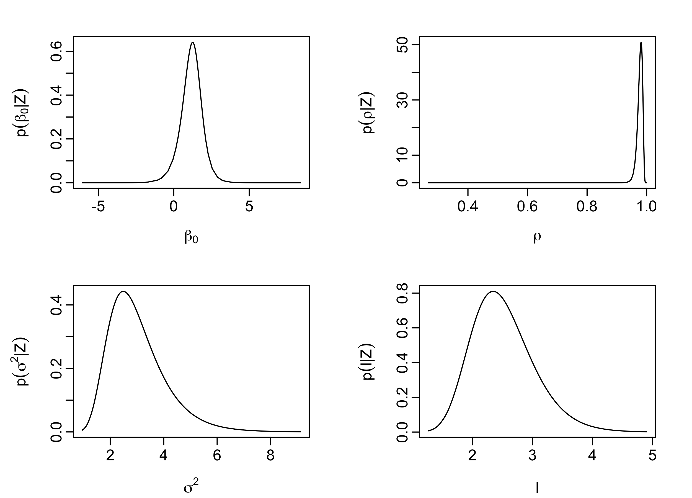
output.field <- inla.spde2.result(inla = output,
name = "spatial.field",
spde = spde,
do.transf = TRUE)
## plot p(beta0 | Z)
plot(output$marginals.fix$Intercept,
type='l',
xlab=expression(beta[0]),
ylab=expression(p(beta[0]*"|"*Z)))
## plot p(rho | Z)
plot(output$marginals.hyperpar$`GroupRho for spatial.field`,
type='l',
xlab=expression(rho),
ylab=expression(p(rho*"|"*Z)))
## plot p(sigma^2 | Z)
plot(output.field$marginals.variance.nominal[[1]],
type='l',
xlab=expression(sigma^2),
ylab=expression(p(sigma^2*"|"*Z)))
## plot p(range | Z)
plot(output.field$marginals.range.nominal[[1]],
type='l',
xlab=expression(l),
ylab=expression(p(l*"|"*Z)))We provide the prediction (posterior mean) and prediction standard error (posterior standard deviation) for \(\log(Y(\cdot))\) in Figures Figure 4.19 and Figure 4.20, respectively. These figures were generated by linearly interpolating the posterior mean and posterior standard deviation of \(\log(\mathbf{Y}^*)\) on a fine grid. Note how a high observed count at a certain location in one year affects the predictions at the same location in neighboring years, even if unobserved.

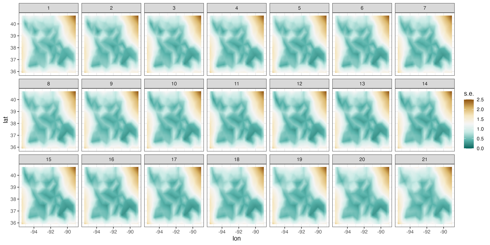
Plotting spatial fields, such as those shown in Figures Figure 4.19 and Figure 4.20, from the INLA output can be a bit involved since each prediction and prediction standard error of \(\boldsymbol{\alpha}_t\) for each \(t\) needs to be projected spatially. First, we extract the predictions and prediction standard errors of \(\boldsymbol{\alpha}= (\boldsymbol{\alpha}_1',\dots,\boldsymbol{\alpha}_T')'\) as follows.
index_pred <- inla.stack.index(stack, "pred")$data
lp_mean <- output$summary.fitted.values$mean[index_pred]
lp_sd <- output$summary.fitted.values$sd[index_pred]Next, we need to create a spatial grid upon which we map the predictions and their associated prediction standard errors. This can be constructed using the function expand.grid. We construct an 80 \(\times\) 80 grid below.
grid_locs <- expand.grid(
lon = seq(min(MOcarolinawren_long$lon) - 0.2,
max(MOcarolinawren_long$lon) + 0.2,
length.out = 80),
lat = seq(min(MOcarolinawren_long$lat) - 0.2,
max(MOcarolinawren_long$lat) + 0.2,
length.out = 80))The function inla.mesh.projector provides all the information required, based on the created spatial grid, to carry out the mapping.
proj.grid <- inla.mesh.projector(MOmesh,
xlim = c(min(MOcarolinawren_long$lon) - 0.2,
max(MOcarolinawren_long$lon) + 0.2),
ylim = c(min(MOcarolinawren_long$lat) - 0.2,
max(MOcarolinawren_long$lat) + 0.2),
dims = c(80, 80))Now we have everything in place to map each \(\boldsymbol{\alpha}_t\) on our spatial grid. We iterate through \(t\), and for each \(t = 1,\dots,T\) we map both the prediction and prediction standard errors of \(\boldsymbol{\alpha}_t\) on the spatial grid as follows.
pred <- sd <- NULL
for(i in 1:n_years) {
ii <- (i-1)*MOmesh$n + 1
jj <- i*MOmesh$n
pred[[i]] <- cbind(grid_locs,
z = c(inla.mesh.project(proj.grid,
lp_mean[ii:jj])),
t = i)
sd[[i]] <- cbind(grid_locs,
z = c(inla.mesh.project(proj.grid,
lp_sd[ii:jj])),
t = i)
}The last thing we need to do is compile all the data (which are in lists) into one data frame for plotting with ggplot2. We concatenate all the list elements rowwise and remove those elements that are NA because they fall outside of the support of any basis function.
pred <- do.call("rbind", pred) %>% filter(!is.na(z))
sd <- do.call("rbind", sd) %>% filter(!is.na(z))The data frames pred and sd now contain the spatio-temporal predictions and spatio-temporal prediction standard errors. Plotting of these fields using ggplot2 is left as an exercise for the reader.